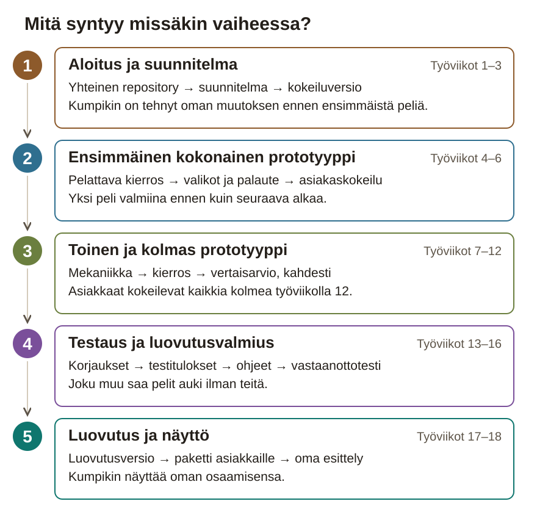

ProtoPaja
Paperinen työpaketti
Kolme Unity-peliprototyyppiä pelimusiikin kurssille, yksilöprojektina
Työviikot 1–18 · luovutus työviikon 18 lopussa
Tämä paketti on aikataulu ja tarkistuslista tilanteisiin, joissa sivusto ei ole auki. Projektipäiväkirja kirjoitetaan sivustolla ja viedään repositoryn project-docs-kansioon. Rasti tässä vihossa ei ole palautus: työ on aina Git-repositoryssa.
Aikataulu on muokattava ehdotus. Työviikot lasketaan opiskelijan omasta aloituksesta, eikä paketissa ole kalenteripäivämääriä.
Repositoryyn ei laiteta henkilötietoja, salasanoja eikä muiden ihmisten nimiä. Henkilöistä kirjataan vain rooli.
Rasti tässä vihossa tai sivustolla ei ole palautus: työnäyte on aina opiskelijan omassa Git-repositoryssa.
Mitä rakennat ja miten etenet
ProtoPajassa teet pelimusiikin kurssille kolme pientä peliä, joihin kurssin opiskelijat lisäävät itse musiikit ja ääniefektit. Jokaisessa pelissä on alkuvalikko, yksi selkeä päämekaniikka, 1–3 minuutin kierros, uudelleenaloitus ja paluu alkuvalikkoon. Pelin pitää olla ymmärrettävä myös ilman ääniä.
- 1. Tasohyppely: hahmo hyppii esteiden yli, kerää esineet ja pääsee maaliin.
- 2. Pulmapeli: laatikot siirretään tavoiteruutuihin, ja alkutilanteen voi palauttaa.
- 3. Toimintapeli: pelaaja selviää areenalla 60 sekuntia yhtä vihollistyyppiä vastaan.
- 4. Jokaisessa pelissä on selkeä loppu, uudelleenaloitus ja paluu alkuvalikkoon.
- 5. Jatkotyöstöohjeesta musiikkikurssin opiskelija näkee, miten projekti avataan ja mistä scenet ja skriptit löytyvät.
Projektin 5 vaihetta

1. Aloitus ja suunnitelma · työviikot 1–3. Asennat Unityn, teet oman repositoryn ja kokeilet, että osaat tallentaa muutoksesi versionhallintaan. Suunnittelet kolme peliä ja käyt suunnitelman läpi ohjaajan ja asiakkaiden kanssa. Lopuksi teet ensimmäisen kokeiluversion, jota voi pelata ilman Unityä. Teet teknisen pohjan ensin, koska alustan ongelmat on helpompi korjata nyt, kun pelissä on vielä vähän koodia.
2. Ensimmäinen kokonainen prototyyppi · työviikot 4–6. Rakennat ensimmäiseen peliin kokonaisen kierroksen, alkuvalikon, uudelleenaloituksen ja visuaalisen palautteen. Asiakkaat kokeilevat peliä työviikolla 6. Käytät heidän palautettaan, kun teet kaksi seuraavaa peliä.
3. Toinen ja kolmas prototyyppi · työviikot 7–12. Teet kaksi seuraavaa peliä samassa järjestyksessä: ensin päämekaniikka, sitten kokonainen kierros ja lopuksi testaus. Toinen opiskelija testaa toisen pelisi vertaisarviossa ennen kuin aloitat kolmannen. Työviikolla 12 asiakkaat kokeilevat kaikkia kolmea peliä.
4. Testaus, korjaukset ja ohjeet · työviikot 13–16. Korjaat asiakkaiden palautteesta valitut asiat, testaat kaikki kolme peliä buildeina eli versioina, joita pelataan ilman Unityä, ja kirjoitat ohjeen jatkotyöstöä varten. Lopuksi joku projektin ulkopuolinen avaa projektit pelkän kirjallisen ohjeesi avulla.
5. Luovutus ja näyttö · työviikot 17–18. Luovutat asiakkaille sovitun paketin: pelattavat versiot, muokattavat Unity-projektit ja ohjeet. Viimeisellä viikolla esittelet ratkaisusi ja teet niihin muutoksen ohjaajan pyynnöstä.
Viikon työvaiheiden tarkat ohjeet ovat sivustolla. Kirjaa jokainen työtehtävä tehtävätaulun kortiksi, jossa on valmis kun -ehto. Kirjaa testin tulos testimatriisiin heti, kun olet ajanut testin. Kirjoita viikon yhteenveto projektipäiväkirjaan viikon lopussa ja työaika Excel-taulukkoon joka työkerralla.
Aikataulu
| Vko | Ajoitus | Viikon aihe | Vaihe |
|---|
| 1 | Työviikko 1 / 18 | Aloitus: ensimmäinen oma muutos | 1 |
| 2 | Työviikko 2 / 18 | Suunnitelma: kolme peliä ja työn järjestys | 1 |
| 3 | Työviikko 3 / 18 | Tekninen pohja ja kokeilukenttä | 1 |
| 4 | Työviikko 4 / 18 | Ensimmäinen pelattava kierros | 2 |
| 5 | Työviikko 5 / 18 | Valikot, uudelleenaloitus ja palaute | 2 |
| 6 | Työviikko 6 / 18 | Ensimmäinen asiakaskokeilu | 2 |
| 7 | Työviikko 7 / 18 | Toinen peli: päämekaniikka ja kenttädata | 3 |
| 8 | Työviikko 8 / 18 | Toinen peli: kokonainen kierros | 3 |
| 9 | Työviikko 9 / 18 | Vertaisarvio ja kolmannen pelin rajaus | 3 |
| 10 | Työviikko 10 / 18 | Kolmas peli: päämekaniikka | 3 |
| 11 | Työviikko 11 / 18 | Kolmas peli: kokonainen kierros | 3 |
| 12 | Työviikko 12 / 18 | Asiakaskatselmointi: kolme peliä | 3 |
| 13 | Työviikko 13 / 18 | Palautteen korjaukset | 4 |
| 14 | Työviikko 14 / 18 | Testausviikko: pelit koottuina versioina | 4 |
| 15 | Työviikko 15 / 18 | Jatkotyöstöohje ja projektien siistiminen | 4 |
| 16 | Työviikko 16 / 18 | Vastaanottotesti | 4 |
| 17 | Työviikko 17 / 18 | Luovutusversio | 5 |
| 18 | Työviikko 18 / 18 | Oman osaamisen esittely | 5 |
Palautus viimeistään työviikon 18 lopussa. Sivusto: tehtävien tarkat ohjeet, toteutusavut ja projektipäiväkirja.
Vaihe 1 – Aloitus ja suunnitelma
Työviikko 1 / 18 – Aloitus: ensimmäinen oma muutos
Yhteys kokonaisprojektiin: Ennen ensimmäistä peliä selvität, mitä toimeksiannossa on vielä päättämättä, ja otat työkalut käyttöön. Asennat Unityn ja GitHub Desktopin ja perustat oman repositoryn, koska tarvitset niitä joka viikko projektin loppuun asti. Työviikolla 2 teet kysymysten vastauksista suunnitelman.
Viikon tavoite: Sinulla on oma repository GitHubissa. Siinä on Unity-kokeiluprojekti, johon olet tehnyt lähtötasokokeilun, ja projekti aukeaa myös silloin, kun kloonaat sen uuteen kansioon.
GitHub Desktop: kuvaohje ilman Git-komentoja
Työaikataulukon pohja (.csv, avautuu Excelissä)
Työvaihe 1 / 5 · Kirjoita kysymykset asiakkaille ja ohjaajalle
- ☐ Lue toimeksianto. Lue sivun Toimeksianto-osio kokonaan. Etsi siitä kahdeksan vaatimusta, jotka jokaisen pelin pitää täyttää, ja kirjoita ne muistiin.
- ☐ Merkitse epäselvät kohdat. Merkitse kohdat, joista et tiedä, mitä asiakkaat tarkoittavat tai milloin asia on valmis.
- ☐ Kirjoita kysymyslista. Kirjoita tiedostoon
kysymykset.md vähintään kahdeksan kysymystä. Merkitse jokaisen kysymyksen perään, onko se asiakkaille vai ohjaajalle. - ☐ Tarkista, että vastaus vaikuttaa työhösi. Muotoile jokainen kysymys niin, että vastauksen perusteella teet jotain toisin. Katso tehtävän esimerkki.
- ☐ Vie kysymykset ohjaajalle ja asiakkaille. Käy lista läpi ohjaajan kanssa. Lähetä asiakkaille tarkoitetut kysymykset tavalla, josta sovit ohjaajan kanssa. Kirjoita vastaukset kysymysten alle.
Valmis kun: Kysymyslistassa on vähintään kahdeksan kysymystä, ja jokaisen perässä lukee, kenelle se on. Olet käynyt listan läpi ohjaajan kanssa.
Tallenna työnäyte: Tiedosto polkuun project-docs/kysymykset.md, kun olet perustanut repositoryn myöhemmin tällä viikolla. Yksi tärkeä kysymys päiväkirjaasi.
Työvaihe 2 / 5 · Asenna ohjaajan päättämä Unity-versio omalle koneellesi
- ☐ Kysy versio ohjaajalta. Kysy ohjaajalta, mikä Unity-versio sinun pitää asentaa. Ohjaaja päättää version, koska musiikkikurssin opiskelijat avaavat pelit samalla versiolla. Suositus on LTS-versio eli pitkään tuettu versio.
- ☐ Asenna Unity Hub. Asenna Unity Hub Unityn lataussivulta. Unity Hub on ohjelma, jolla asennat Unityn ja avaat projektit. Kirjaudu Unity-tunnuksella. Kysy ohjaajalta, mitä tunnusta käytät.
- ☐ Asenna editori. Valitse Unity Hubissa Installs ja sitten Install Editor. Valitse ohjaajan antama versio. Jos sitä ei näy listassa, hae se Unityn versioarkistosta.
- ☐ Valitse moduulit. Valitse asennuksen moduuleista koodieditori. Valitse myös sen alustan tuki, jolla pelejä pelataan, esimerkiksi Windows Build Support tai Web Build Support. Jos alusta ei ole vielä tiedossa, lisäät sen myöhemmin.
- ☐ Asenna GitHub Desktop. Asenna GitHub Desktop viikon kuvaohjeen mukaan ja kirjaudu GitHub-tunnukseesi. GitHub Desktop on ohjelma, jolla tallennat muutokset versionhallintaan ilman komentoja.
- ☐ Kirjoita versionumerot muistiin. Kirjoita päiväkirjaasi Unityn tarkka versionumero Unity Hubin Installs-näkymästä. Kirjoita myös GitHub Desktopin versio, jonka löydät Help-valikon kohdasta About GitHub Desktop.
Valmis kun: Unity Hubin Installs-näkymässä näkyy ohjaajan antama versio, ja olet kirjautunut GitHub Desktopiin GitHub-tunnuksellasi.
Tallenna työnäyte: Versionumerot päiväkirjaasi.
Työvaihe 3 / 5 · Perusta oma repository ja Unity-kokeiluprojekti
- ☐ Piilota sähköpostiosoitteesi. Avaa GitHubissa Settings ja Emails ja valitse Keep my email addresses private ennen ensimmäistä committia. Commit on yksi tallennettu muutos. Kysy ohjaajalta, millä nimellä näyt commitien tekijänä.
- ☐ Luo repository. Luo GitHubissa uusi repository. Valitse näkyvyydeksi Private, niin repository pysyy yksityisenä, kunnes ohjaaja päättää toisin. Valitse Add .gitignore -kohtaan Unity.
- ☐ Luo kokeiluprojekti. Kloonaa eli kopioi repository omalle koneellesi GitHub Desktopilla. Luo sitten Unity Hubissa ohjaajan antamalla versiolla 2D-projekti nimeltä Kokeilu kloonatun kansion sisään.
- ☐ Siirrä .gitignore oikeaan kansioon. Siirrä repositoryn pääkansiossa oleva .gitignore-tiedosto Kokeilu-kansioon, Assets-kansion viereen. Tiedostossa luetellaan tiedostot, joita ei tallenneta versionhallintaan. Unityn .gitignore-pohja toimii vain siinä kansiossa, jossa Unity-projekti on.
- ☐ Tarkista ja lähetä GitHubiin. Tarkista GitHub Desktopin Changes-listasta, ettei siellä ole Library- tai Temp-kansioita. Lisää
project-docs/kysymykset.md, tee commit ja paina Push origin. Push lähettää commitin GitHubiin. - ☐ Kokeile, että projekti aukeaa toisessa paikassa. Kloonaa repository toiseen kansioon tai koulun koneelle. Avaa sieltä Kokeilu-kansio Unity Hubin Add-toiminnolla. Unity rakentaa Library-kansion itse, mikä voi kestää muutaman minuutin.
Valmis kun: Repository on GitHubissa yksityisenä, siinä ei ole Library- tai Temp-kansioita, ja kokeiluprojekti aukeaa myös toisesta kansiosta tai toiselta koneelta.
Tallenna työnäyte: Repositoryn osoite ja ensimmäisen commitin linkki päiväkirjaasi.
Työvaihe 4 / 5 · Tee lähtötasokokeilu ja tallenna se versionhallintaan
- ☐ Luo oma scene. Avaa Kokeilu-projekti Unityssä. Luo File-valikon New Scene -toiminnolla uusi scene eli Unityn taso, esimerkiksi pelikenttä tai alkuvalikko. Tallenna se Scenes-kansioon nimellä Lahtotaso.
- ☐ Lisää neliö ja valmis skripti. Lisää sceneen neliö GameObject-valikosta: 2D Object, Sprites ja Square. Luo Assets-kansioon kansio Scripts ja siihen C#-skripti Spinner. Korvaa skriptin sisältö koodipohjalla kohdasta ”Tarvitsen apua tähän työvaiheeseen” ja liitä skripti neliöön.
- ☐ Ennusta ja muuta arvoa. Kirjoita ensin ennuste tiedostoon
project-docs/lahtotaso.md: mitä tapahtuu, kun speed-arvo kaksinkertaistuu? Muuta arvo Inspector-ikkunassa. Paina sitten Play, jolloin peli käynnistyy editorissa, ja katso, osuiko ennuste. - ☐ Kirjoita ehto. Täydennä koodipohjan TODO-kohta niin, että neliö pyörii toiseen suuntaan, kun välilyönti on painettuna. Kokeile Play-tilassa.
- ☐ Selitä havainnot. Kirjoita tiedostoon
project-docs/lahtotaso.md omin sanoin, osuiko ennuste, mitä kirjoittamasi ehto tekee ja mikä oli vaikeaa. - ☐ Tee commit ja push. Tallenna scene. Tee commit, jonka viesti kertoo, mitä muutit, ja paina Push origin.
- ☐ Käy kokeilu läpi ohjaajan kanssa. Näytä ohjaajalle pyörivä neliö ja selityksesi. Ohjaaja kertoo, teetkö pieniä harjoituksia ennen työviikkoa 3. Kirjoita sovitut harjoitukset samaan tiedostoon.
Valmis kun: Neliö pyörii Lahtotaso-scenessä, ja välilyönti kääntää suunnan. Commitisi näkyy GitHubin historiassa, ja olet käynyt kokeilun läpi ohjaajan kanssa.
Tallenna työnäyte: Commitin linkki ja tiedoston project-docs/lahtotaso.md polku päiväkirjaasi.
Työvaihe 5 / 5 · Ota käyttöön tehtävätaulu ja työajan seuranta
- ☐ Valitse taulu. Valitse tehtävätauluksi Trello tai muu taulu, josta sovit ohjaajan kanssa. Kutsu ohjaaja tauluun, jos hän haluaa seurata sitä.
- ☐ Tee sarakkeet. Tee tauluun sarakkeet Tulossa, Työn alla, Testattavana ja Valmis.
- ☐ Tee ensimmäiset kortit. Tee kortti jokaisesta tämän viikon työvaiheesta. Kirjoita korttiin tavoite ja valmis kun -ehto eli se, mistä näet, että työ on valmis.
- ☐ Luo työaikataulukko. Lataa viikon työaikataulukon pohja ja avaa se Excelissä. Tallenna taulukko paikkaan, jonka ohjaaja näkee, esimerkiksi Teamsiin.
- ☐ Kirjaa tämän viikon työaika. Kirjaa taulukkoon tämän viikon työaikasi. Kirjoita yksi rivi jokaisesta työkerrasta.
- ☐ Kirjoita sijainnit README-tiedostoon. Kirjoita repositoryn
README.md-tiedostoon, missä tehtävätaulu ja työaikataulukko ovat. Älä kirjoita sinne salasanoja.
Valmis kun: Taulussa on kortti jokaisesta tämän viikon työvaiheesta, ja työaikataulukossa on rivi jokaisesta tämän viikon työkerrastasi.
Tallenna työnäyte: Kuvakaappaus taulusta polkuun project-docs/tyonaytteet/viikko-1/tehtavataulu.png ja päivitetty README.md.
Viikon lopputarkistus: Kloonaa repositorysi uuteen kansioon ja avaa sieltä Kokeilu-projekti Unity Hubissa. Avaa Lahtotaso-scene ja paina Play: neliö pyörii, ja välilyönti kääntää suunnan. Commitisi näkyvät GitHubin historiassa sinun tekijänimelläsi.
Työnäyte Git-repositoryyn ennen rastia: Repositoryn commit-historia, project-docs/kysymykset.md, project-docs/lahtotaso.md ja project-docs/tyonaytteet/viikko-1/tehtavataulu.png.
Työviikko 2 / 18 – Suunnitelma: kolme peliä ja työn järjestys
Yhteys kokonaisprojektiin: Työviikolla 1 kysyit asiakkailta ja ohjaajalta, mitä toimeksiannossa oli vielä päättämättä. Nyt teet vastausten perusteella suunnitelman: päätät, mikä on kunkin pelin pienin toimiva versio ja teetkö pelit yhteen vai kolmeen Unity-projektiin. Työviikolla 3 aloitat ensimmäisen pelin niistä korteista, jotka teet tällä viikolla.
Viikon tavoite: Suunnitelmassa on jokaisen pelin päämekaniikka, tavoite ja rajaus. Ensimmäisen pelin kortit ovat tehtävätaulussa siinä järjestyksessä, josta sovit ohjaajan kanssa, ja olet merkinnyt avoimiksi asiat, joita asiakkaat tai ohjaaja eivät ole vielä vahvistaneet.
Avaa suunnitelmalomake
Työvaihe 1 / 4 · Kuvaa kolmen pelin pienin toimiva versio
- ☐ Valitse kolme aihetta. Valitse toimeksiannon aiheista kolme tai ehdota omia, jotka ovat yhtä laajoja. Asiakkaat vahvistavat aiheet, kun lähetät ne heille tämän viikon viimeisessä työvaiheessa.
- ☐ Kuvaa päämekaniikka ja tavoite. Kirjoita suunnitelmalomakkeelle jokaisesta pelistä, mitä pelaaja tekee yhä uudelleen ja mihin hän pyrkii. Päämekaniikka on pelin tärkein toiminto, esimerkiksi hyppy.
- ☐ Kuvaa kierroksen kulku. Kirjoita, miten kierros alkaa, miten se päättyy ja miten pelaaja aloittaa uudelleen. Yhden kierroksen pitää kestää noin 1–3 minuuttia.
- ☐ Kirjoita pienin toimiva versio. Kirjoita jokaiselle pelille pienin toimiva versio yhdellä virkkeellä. Se on pelin ensimmäinen muoto, jossa päämekaniikka, tavoite ja kierroksen loppu toimivat. Katso tehtävän esimerkki.
- ☐ Kirjoita, mitä jätät pois. Kirjoita suunnitelmalomakkeelle vähintään kolme houkuttelevaa lisäystä, joita et tee.
- ☐ Tallenna suunnitelma. Lataa lomakkeelta
suunnitelma.md ja tallenna se polkuun project-docs/suunnitelma.md. Tee commit ja push.
Valmis kun: Suunnitelmassa on jokaisesta pelistä päämekaniikka, tavoite, kierroksen kulku ja pienin toimiva versio sekä vähintään kolme asiaa, jotka jätät pois.
Tallenna työnäyte: project-docs/suunnitelma.md repositoryyn.
Työvaihe 2 / 4 · Päätä, teetkö pelit yhteen vai kolmeen Unity-projektiin
- ☐ Ota aikaa, kuinka kauan avaaminen kestää. Kloonaa repositorysi uuteen kansioon ja avaa sieltä Kokeilu-projekti Unity Hubissa. Ota aikaa, kuinka kauan menee, ennen kuin editori on valmis käyttöön.
- ☐ Tee vertailutaulukko. Luo päätösloki eli tiedosto
project-docs/paatokset.md, johon kirjaat projektin päätökset. Kopioi siihen taulukkopohja kohdasta ”Tarvitsen apua tähän työvaiheeseen” ja kirjoita mittaamasi aika taulukon yläpuolelle. - ☐ Vastaa vertailun kysymyksiin. Vastaa taulukossa jokaiseen kysymykseen sekä yhden että kolmen projektin kohdalla: Kuinka helposti musiikkikurssin opiskelija saa yhden pelin auki? Miten saat saman alkuvalikon kaikkiin peleihin? Montako buildia eli pelattavaa versiota teet luovutukseen?
- ☐ Päätä ja perustele kahdella syyllä. Valitse vaihtoehto. Kirjoita päätöslokiin päivämäärä, valintasi ja kaksi syytä, jotka perustuvat vastauksiisi. Kirjoita valinta myös suunnitelmalomakkeelle.
- ☐ Päätä, miten nimeät tiedostot. Kirjoita suunnitelmalomakkeen kenttään ”Scenejen, skriptien ja resurssien nimeäminen”, miten nimeät tiedostot ja kansiot. Esimerkiksi skriptin nimi kertoo, mitä se tekee: PlayerJump tai GoalTrigger.
- ☐ Näytä päätös ohjaajalle. Käy päätös ja syyt läpi ohjaajan kanssa. Jos ohjaaja ei vielä vahvista päätöstä, merkitse se päätöslokiin avoimeksi asiaksi ja jatka valitsemallasi tavalla.
Valmis kun: Päätöslokissa on mittaamasi aika, vertailutaulukko vastauksineen, päätös päivämäärineen ja kaksi syytä, ja olet näyttänyt päätöksen ohjaajalle.
Tallenna työnäyte: project-docs/paatokset.md repositoryyn.
Työvaihe 3 / 4 · Jaa ensimmäinen peli tehtävätaulun korteiksi
- ☐ Valitse ensimmäinen peli. Valitse, minkä kolmesta pelistä teet ensin. Valitse se, jonka päämekaniikka on sinulle selvin, niin pääset alkuun nopeasti.
- ☐ Jaa peli toiminnoiksi. Jaa ensimmäisen pelin pienin toimiva versio erillisiksi toiminnoiksi, esimerkiksi liike, hyppy, kerättävä esine, este, maali, alkuvalikko ja loppuruutu.
- ☐ Järjestä toiminnot tärkeysjärjestykseen. Laita listan alkuun päämekaniikka, sitten kierroksen loppu ja vasta sen jälkeen valikot ja grafiikat. Silloin saat pelattavan version mahdollisimman aikaisin.
- ☐ Tee kortit. Tee jokaisesta toiminnosta kortti tehtävätauluun. Kirjoita korttiin tavoite ja valmis kun -ehto eli se, mitä pelissä näkyy, kun toiminto toimii.
- ☐ Arvioi työtunnit. Kirjoita jokaiseen korttiin, montako tuntia arvioit työhön menevän. Työviikolla 6 vertaat arviota tunteihin, jotka kirjaat työaikataulukkoon.
Valmis kun: Ensimmäisen pelin jokaisella toiminnolla on kortti, jossa on tavoite, valmis kun -ehto ja tuntiarvio, ja kortit ovat siinä järjestyksessä, jossa aiot tehdä ne.
Tallenna työnäyte: Kuvakaappaus taulusta polkuun project-docs/tyonaytteet/viikko-2/kortit.png.
Työvaihe 4 / 4 · Käy suunnitelma läpi ohjaajan kanssa
- ☐ Listaa vahvistettavat asiat. Katso suunnitelmalomakkeelta kohdat, jotka asiakkaiden tai ohjaajan pitää vahvistaa: pelien aiheet, pelialusta, tekoälyn käyttö, repositoryn julkisuus, lisenssi, tutkinnon perusteet ja asiakaskokeilujen ajat.
- ☐ Lähetä aiheet asiakkaille. Lähetä asiakkaille kolmen pelin kuvaukset. Käytä viestipohjaa kohdasta ”Tarvitsen apua tähän työvaiheeseen”. Kysy, sopivatko aiheet musiikkikurssille ja millä koneilla kurssilla pelataan.
- ☐ Käy suunnitelma läpi ohjaajan kanssa. Näytä viikkotarkistuksessa eli viikoittaisessa tapaamisessa ohjaajalle suunnitelma ja Unity-projekteja koskeva päätös. Käy samalla läpi muut vahvistettavat asiat.
- ☐ Sovi korttien järjestys. Näytä ohjaajalle ensimmäisen pelin kortit tuntiarvioineen. Sovi yhdessä, missä järjestyksessä teet ne ja mitkä kortit teet työviikolla 3. Siirrä kortit sovittuun järjestykseen.
- ☐ Kirjaa vastaukset. Kirjoita saamasi vastaukset suunnitelmalomakkeelle ja päätöslokiin. Jätä tyhjiksi kentät, joihin et vielä saanut vastausta. Lomake merkitsee ne avoimiksi asioiksi, ja voit jatkaa työtä.
- ☐ Tallenna päivitetty suunnitelma. Lataa
suunnitelma.md lomakkeelta uudelleen ja tallenna se polkuun project-docs/suunnitelma.md. Tee commit ja push.
Valmis kun: Ohjaaja on nähnyt suunnitelman ja korttien järjestyksen, olet lähettänyt aiheet asiakkaille, ja jokainen vahvistettava asia on suunnitelmassa joko vastattuna tai avoimena asiana.
Tallenna työnäyte: Päivitetty project-docs/suunnitelma.md ja päätöslokin merkintä siitä, milloin lähetit viestin asiakkaille.
Viikon lopputarkistus: Kerro ohjaajalle ilman muistiinpanoja jokaisen pelin pienin toimiva versio, teetkö pelit yhteen vai kolmeen Unity-projektiin ja mitkä ensimmäisen pelin kortit teet ensin. Ohjaaja vertaa kertomaasi suunnitelmaan ja tehtävätauluun, ja ne vastaavat toisiaan.
Työnäyte Git-repositoryyn ennen rastia: project-docs/suunnitelma.md, project-docs/paatokset.md ja project-docs/tyonaytteet/viikko-2/kortit.png.
Työviikko 3 / 18 – Tekninen pohja ja kokeilukenttä
Yhteys kokonaisprojektiin: Työviikolla 2 päätit, mitä teet ja missä järjestyksessä. Nyt aloitat ensimmäisen pelin: teet projektin kansiot, kokeilukentän ja päämekaniikan ja kokeilet, että peli toimii myös ilman Unityä. Kun nämä ovat valmiina, voit työviikolla 4 keskittyä siihen, miten kierros päättyy.
Viikon tavoite: Ensimmäisen pelin kokeilukentässä voi kokeilla päämekaniikkaa, ja kokeiluversio käynnistyy sovitulla alustalla ilman Unity-editoria.
Työvaihe 1 / 5 · Perusta projektirakenne päätöksesi mukaan
- ☐ Luo ensimmäisen pelin projekti. Luo repositoryyn Unity-projekti työviikon 2 päätöksen mukaan: joko ensimmäisen pelin oma projekti tai kolmen pelin yhteinen projekti. Käytä ohjaajan antamaa Unity-versiota ja 2D-pohjaa, esimerkiksi Universal 2D.
- ☐ Lisää .gitignore. Kopioi Kokeilu-kansion .gitignore uuden Unity-projektin kansioon, Assets-kansion viereen. Muuten Unityn väliaikaiset tiedostot menevät versionhallintaan.
- ☐ Tarkista versionhallinnan asetukset. Avaa Edit-valikosta Project Settings. Tarkista Editor-kohdasta, että Asset Serialization Mode on Force Text, ja Version Control -kohdasta, että Mode on Visible Meta Files.
- ☐ Luo kansiot. Luo pelin Assets-kansioon kansiot Scenes, Scripts, Prefabs ja Art. Nimeä tiedostot suunnitelmasi nimeämissäännön mukaan, esimerkiksi niin, että skriptin nimi kertoo, mitä skripti tekee.
- ☐ Kirjoita rakenne README-tiedostoon. Kirjoita repositoryn
README.md-tiedostoon kansiorakenne ja Unity-versio. Tee commit ja push.
Valmis kun: Ensimmäisen pelin projekti aukeaa Unity Hubista ohjaajan antamalla versiolla, Changes-listassa ei ole Library- tai Temp-kansioita, ja README kertoo rakenteen.
Tallenna työnäyte: Commit, jossa on projektirakenne, ja päivitetty README.md repositoryyn.
Työvaihe 2 / 5 · Rakenna ensimmäisen pelin kokeilukenttä
- ☐ Luo kokeilukentän scene. Luo pelin Scenes-kansioon uusi scene nimeltä Kokeilukentta. Scene on Unityn näkymä tai taso, esimerkiksi pelikenttä.
- ☐ Rakenna kenttä. Lisää sceneen lattia ja muutama este neliöinä (GameObject, 2D Object, Sprites ja Square). Lisää niihin Box Collider 2D -komponentti, jotta pelaaja ei putoa niiden läpi.
- ☐ Lisää pelaaja. Lisää pelaajaksi yksi neliö ja siihen komponentit Rigidbody 2D ja Box Collider 2D. Rigidbody 2D lisää pelaajaan painovoiman. Tallenna scene, tee commit ja push.
- ☐ Jaa päämekaniikka osiin. Jaa päämekaniikka osiin, jotka voit ohjelmoida ja kokeilla yksi kerrallaan. Tasohyppelyssä esimerkiksi osa 1 on liike sivuttain ja osa 2 hyppy.
- ☐ Tee osista kortit. Tee jokaisesta osasta kortti tehtävätauluun. Kirjoita korttiin odotettu tulos: mitä pelaaja tekee ja mitä ruudulla silloin tapahtuu.
Valmis kun: Kokeilukenttä on repositoryssa, pelaaja putoaa lattialle Play-tilassa, ja tehtävätaulussa on kortti jokaisesta päämekaniikan osasta odotettuine tuloksineen.
Tallenna työnäyte: Kentän commit repositoryyn ja kuvakaappaus korteista polkuun project-docs/tyonaytteet/viikko-3/kortit.png.
Työvaihe 3 / 5 · Ohjelmoi ensimmäisen pelin päämekaniikka
- ☐ Suunnittele ennen koodia. Kirjoita korttiin vastaukset neljään kysymykseen: Mitä tietoa tarvitset? Mikä käynnistää toiminnon? Millä ehdolla se tapahtuu? Mitä muuttuu? Kirjoita vastauksista lyhyt pseudokoodi ja ennuste siitä, mitä Play-tilassa tapahtuu.
- ☐ Luo skripti. Luo Scripts-kansioon C#-skripti, jonka nimi kertoo, mitä se tekee, esimerkiksi PlayerMovement tai PlayerJump.
- ☐ Kirjoita toiminto. Kirjoita skriptiin päämekaniikan ensimmäinen osa. Kohdassa ”Tarvitsen apua tähän työvaiheeseen” on koodipohja, jonka TODO-kohdat täytät itse.
- ☐ Liitä skripti pelaajaan. Valitse pelaaja ja vedä skripti Scripts-kansiosta Inspector-ikkunaan. Tallenna scene.
- ☐ Kokeile Play-tilassa. Kokeile osaa ja vertaa tulosta kortin odotettuun tulokseen. Korjaa koodia, kunnes peli toimii niin kuin kortissa lukee.
- ☐ Tee loput osat samalla tavalla. Tee päämekaniikan seuraava osa, esimerkiksi hyppy, samoilla askelilla: ensin pseudokoodi ja ennuste, sitten skripti ja kokeilu.
- ☐ Tee commit ja push. Tee commit jokaisesta toimivasta osasta. Kirjoita viestiin, mitä osa tekee, ja paina Push origin. Siirrä kortti Testattavana-sarakkeeseen.
Valmis kun: Päämekaniikan osat toimivat Play-tilassa korttien odotettujen tulosten mukaan, ja jokaisesta osasta on commit historiassa.
Tallenna työnäyte: Commit-linkit tehtävätaulun kortteihin ja päiväkirjaasi.
Työvaihe 4 / 5 · Tee kokeiluversiosta build, joka toimii ilman Unityä
- ☐ Avaa build-asetukset. Avaa File-valikosta Build Profiles. Vanhemmissa Unity-versioissa sama ikkuna on nimeltään Build Settings.
- ☐ Valitse alusta. Valitse alusta, jolla musiikkikurssilla pelataan. Jos alustaa ei ole vielä vahvistettu, valitse oma käyttöjärjestelmäsi ja kirjoita valinta päätöslokiin.
- ☐ Lisää scene. Pidä kokeilukentän scene auki ja paina Build Profiles -ikkunan Scene List -kohdassa Add Open Scenes. Unity ottaa buildiin mukaan vain ne scenet, jotka ovat luettelossa.
- ☐ Kokoa peli. Paina Build. Luo Unity-projektin kansioon uusi kansio nimeltä
Builds ja valitse se. Builds-kansio ei mene versionhallintaan, koska .gitignore jättää sen pois. - ☐ Käynnistä build. Käynnistä koottu peli ilman editoria ja kokeile kaikkia päämekaniikan osia.
- ☐ Kirjaa erot. Kirjoita päätöslokiin alusta, build-asetukset ja jokainen ero, jonka huomasit editorin ja buildin välillä.
Valmis kun: Koottu kokeiluversio käynnistyy ilman Unity-editoria, ja kaikki päämekaniikan osat toimivat siinä.
Tallenna työnäyte: Kuvakaappaus käynnissä olevasta buildista polkuun project-docs/tyonaytteet/viikko-3/build.png ja alustan tiedot päätöslokiin.
Työvaihe 5 / 5 · Selitä koodisi ohjaajalle ja tee pyydetty muutos
- ☐ Valitse skripti. Valitse skripti, jonka kirjoitit itse tällä viikolla. Tee tämä työvaihe viikkotarkistuksessa eli viikoittaisessa tapaamisessa ohjaajan kanssa. Pidä peli auki Unityssä.
- ☐ Selitä ohjaajalle. Selitä ilman muistiinpanoja, mitä skripti tekee: mitä tietoa se käyttää, mikä käynnistää toiminnon ja millä ehdolla.
- ☐ Tee pyydetty muutos. Ohjaaja pyytää pienen muutoksen, esimerkiksi uuden arvon tai ehdon. Tee muutos ja kokeile sitä Play-tilassa ohjaajan nähden.
- ☐ Kirjaa tilanne. Kirjoita tiedostoon
project-docs/selita-ja-muuta.md päivämäärä, skriptin nimi, pyydetty muutos ja yksi asia, jota et vielä osannut selittää. - ☐ Katso, mistä sinulla on jo työnäyte. Avaa sivuston Näyttömatriisi-näkymä ja rastita rivit, joihin sinulla on nyt työnäyte. Kirjoita samaan tiedostoon yksi vaatimus, josta työnäyte vielä puuttuu.
- ☐ Tee commit ja push. Tee muutoksesta ja merkinnästä commit ja paina Push origin.
Valmis kun: Olet selittänyt skriptisi ohjaajalle, pyydetty muutos toimii Play-tilassa, ja selitä ja muuta -tiedostossa on tämän viikon merkintä.
Tallenna työnäyte: project-docs/selita-ja-muuta.md ja muutoksen commit-linkki päiväkirjaasi.
Viikon lopputarkistus: Käynnistä koottu kokeiluversio ilman Unity-editoria ja kokeile kokeilukentässä kaikkia päämekaniikan osia. GitHubin historiassa on commit jokaisesta osasta.
Työnäyte Git-repositoryyn ennen rastia: Projektirakenteen commit, päämekaniikan commitit, korttien pseudokoodit, project-docs/tyonaytteet/viikko-3/build.png ja project-docs/selita-ja-muuta.md.
Vaihe 2 – Ensimmäinen kokonainen prototyyppi
Työviikko 4 / 18 – Ensimmäinen pelattava kierros
Yhteys kokonaisprojektiin: Työviikolla 3 kokeilit päämekaniikkaa pienessä kokeilukentässä. Nyt teet siitä kokonaisen kierroksen, jolla on alku ja loppu. Alkuvalikon ja oikeat grafiikat lisäät vasta työviikolla 5. Tällä viikolla keskityt siihen, että itse peli toimii.
Viikon tavoite: Ensimmäistä peliä voi pelata alusta kierroksen päättymiseen asti, ja lopputulos näkyy ruudulla.
Työvaihe 1 / 3 · Suunnittele kierroksen loppu
- ☐ Valitse, milloin kierros päättyy. Valitse suunnitelmastasi ensimmäisen pelin päättymisehto eli tilanne, jossa kierros loppuu. Esimerkiksi pelaaja koskettaa maalia tai osuu piikkiin.
- ☐ Kirjoita, mitä ruudulla näkyy lopussa. Kirjoita, mitä pelaaja tekee juuri ennen loppua ja mitä ruudulla sen jälkeen näkyy. Esimerkiksi teksti Maali! ilmestyy ja pelaaja pysähtyy.
- ☐ Jaa toiminta kahteen skriptiin. Yksi skripti huomaa, että kierros päättyy, esimerkiksi GoalTrigger. Toinen skripti näyttää loppuviestin ja pysäyttää pelin, esimerkiksi RoundManager. Kun skripti tekee vain yhden asian, löydät virheen helpommin.
- ☐ Nimeä metodi, joka lopettaa kierroksen. Metodi on skriptin nimetty toiminto. Ensimmäinen skripti kutsuu eli käynnistää toisen skriptin metodin, kun kierros päättyy. Anna metodille nimi, joka kertoo, mitä se tekee, esimerkiksi EndRound.
- ☐ Tee kortit tehtävätauluun. Tee tehtävätauluun kaksi korttia: yksi skriptistä, joka huomaa kierroksen lopun, ja yksi skriptistä, joka näyttää loppuviestin. Kirjoita kortteihin metodin nimi, odotettu tulos ja tuntiarvio.
- ☐ Kirjoita pseudokoodi. Vastaa kortteihin neljään kysymykseen: mitä tietoa skripti tarvitsee, mikä käynnistää toiminnon, millä ehdolla se tapahtuu ja mitä muuttuu. Kirjoita vastauksista lyhyt pseudokoodi eli koodin suunnitelma tavallisella suomella.
- ☐ Kirjoita ennuste. Kirjoita jokaiseen korttiin yksi ennuste eli se, mitä odotat näkeväsi, kun kokeilet skriptiä Play-tilassa. Tarkistat ennusteen, kun skripti on valmis.
Valmis kun: Tehtävätaulussa on kaksi korttia kierroksen lopusta. Korteissa ovat metodin nimi, odotettu tulos, tuntiarvio, pseudokoodi ja ennuste.
Tallenna työnäyte: Kuvakaappaus korteista polkuun project-docs/tyonaytteet/viikko-4/kortit.png.
Työvaihe 2 / 3 · Ohjelmoi kierroksen loppu
- ☐ Valmistele maali. Lisää maaliin Box Collider 2D -komponentti ja valitse siitä Is Trigger. Silloin collider eli törmäysmuoto ei pysäytä pelaajaa, vaan kertoo skriptille, kun pelaaja koskettaa maalia.
- ☐ Kirjoita skripti, joka huomaa lopun. Luo Scripts-kansioon skriptit GoalTrigger ja RoundManager apukohdan koodipohjista. Liitä GoalTrigger maaliin ja täytä sen TODO-kohdat pseudokoodisi mukaan. Kirjoita aluksi metodin kutsun tilalle Debug.Log-rivi, joka tulostaa viestin Console-ikkunaan.
- ☐ Kokeile, huomaako skripti lopun. Kokeile Play-tilassa: kun pelaaja koskettaa maalia, Console-ikkunaan tulostuu viestisi. Jos viestiä ei tule, lue vinkit kohdasta ”Tarvitsen apua tähän työvaiheeseen” ennen kuin jatkat.
- ☐ Kirjoita skripti, joka lopettaa kierroksen. Liitä RoundManager-skripti tyhjään GameObjectiin. Tee loppuviestille paneeli ja teksti, ja raahaa ne Inspectorissa skriptin kenttiin End Panel ja End Text. Täytä TODO-kohdat.
- ☐ Kytke skriptit toisiinsa. Valitse maali ja raahaa Hierarchy-ikkunasta GameObject, jossa RoundManager on, GoalTrigger-skriptin Round Manager -kenttään. Kirjoita sitten Debug.Log-rivin tilalle EndRound-metodin kutsu.
- ☐ Varmista, ettei loppu toistu. Kokeile Play-tilassa, että loppuviesti näkyy kerran ja pelaaja pysähtyy. Vertaa tulosta korttien ennusteisiin ja korjaa koodia, kunnes ne vastaavat toisiaan.
- ☐ Tee commit ja push. Tee commit, jonka viesti kertoo, mitä lisäsit, esimerkiksi ”Kierroksen loppu ja loppuviesti”. Paina Push origin ja siirrä kortit Testattavana-sarakkeeseen.
Valmis kun: Kierroksen loppu toimii Play-tilassa korttien odotettujen tulosten mukaan. Loppuviesti näkyy vain kerran, kierros ei jatku viestin jälkeen, ja commit on historiassa.
Tallenna työnäyte: Commitin linkki kortteihin ja projektipäiväkirjaan.
Työvaihe 3 / 3 · Testaa kierros testitapauksilla T01 ja T02
- ☐ Luo testimatriisi. Luo tiedosto
project-docs/testimatriisi.md ja kopioi siihen pohja kohdasta ”Tarvitsen apua tähän työvaiheeseen”. Käytät samaa tiedostoa koko projektin ajan kaikkien pelien testeihin. - ☐ Kirjoita odotetut tulokset ensin. Kirjoita testitapaukset T01 ja T02 ennen kuin kokeilet peliä. Testitapaus T01 on onnistunut kierros. Testitapaus T02 on tilanne, jossa pelaaja on maalin vieressä mutta ei kosketa sitä.
- ☐ Tee testit. Tee testitapaukset Play-tilassa yksi kerrallaan. Kirjoita Havaittu tulos -sarakkeeseen, mitä oikeasti tapahtui, ja Versio-sarakkeeseen sen commitin tunniste, jota testasit.
- ☐ Tee virheistä kortit. Jos havaittu tulos on eri kuin odotettu tulos, tee virheestä kortti tehtävätauluun. Kirjoita korttiin testitapauksen tunnus ja se, mitä tapahtui.
- ☐ Korjaa ja testaa uudelleen. Korjaa virhe ja tee korjauksesta commit. Tee sama testitapaus uudelleen ja kirjoita tulos Korjaus ja uusintatesti -sarakkeeseen.
Valmis kun: Testimatriisissa ovat testitapaukset T01 ja T02 odotettuine ja havaittuine tuloksineen. Jos virhe jäi korjaamatta, sen kortti on taulussa keskeneräisenä, ja olet pyytänyt apua ohjaajalta.
Tallenna työnäyte: project-docs/testimatriisi.md, korjauscommit ja uusintatestin tulos repositoryyn.
Viikon lopputarkistus: Käynnistä peli Play-tilassa ja pelaa kierros loppuun asti. Loppuviesti kertoo oikein, miten kierroksessa kävi, eikä peli jatku normaalisti viestin jälkeen. Teet Uudelleen-painikkeen vasta työviikolla 5, joten tällä viikolla aloitat uuden kierroksen lopettamalla Play-tilan ja käynnistämällä sen uudelleen. Testimatriisissa ovat testitapausten T01 ja T02 tulokset, ja historiassa on commit kierroksen lopusta.
Työnäyte Git-repositoryyn ennen rastia: Kierroksen lopun kortit pseudokoodeineen, commit kierroksen lopusta ja project-docs/testimatriisi.md, jossa ovat testitapausten T01 ja T02 tulokset.
Työviikko 5 / 18 – Valikot, uudelleenaloitus ja palaute
Yhteys kokonaisprojektiin: Työviikolla 4 teit kierroksen, jonka lopun pelaaja näkee ruudulla. Nyt lisäät kierroksen ympärille alkuvalikon, uudelleenaloituksen ja palautteen, jotta joku muu kuin sinä voi pelata peliä. Teet valikot omassa haarassa eli repositoryn erillisessä työversiossa, jotta päähaarassa on koko ajan toimiva peli. Valikosta teet prefabin, jonka voit myöhemmin lisätä kahteen muuhun peliin.
Viikon tavoite: Pelin voi käynnistää alkuvalikosta, pelata loppuun, aloittaa uudelleen ja palata alkuvalikkoon, ja pelin tapahtumista näkyy selkeä palaute.
Työvaihe 1 / 4 · Suunnittele valikot ja palaute
- ☐ Kirjoita ohjausohje. Kirjoita pelin ohjausohje enintään neljällä rivillä: mitä näppäimiä pelaaja käyttää ja mikä on pelin tavoite. Tämä teksti tulee alkuvalikkoon.
- ☐ Piirrä pelin kolme ruutua. Piirrä paperille kolme ruutua: alkuvalikko, peliruutu ja loppuruutu. Merkitse jokaiseen ruutuun sen painikkeet ja piirrä nuoli siihen ruutuun, johon painike vie.
- ☐ Valitse, mistä pelaaja saa palautetta. Listaa tapahtumat, joista pelaajan pitää nähdä palaute ruudulla, esimerkiksi kerätty esine, osuma ja jäljellä olevien esineiden määrä. Kirjoita jokaisen viereen, miltä palaute näyttää.
- ☐ Tee kortit tehtävätauluun. Tee tehtävätauluun kaksi korttia. Ensimmäisessä on alkuvalikko ja paluu alkuvalikkoon, toisessa uudelleenaloitus ja palaute. Kirjoita kortteihin odotettu tulos ja tuntiarvio.
- ☐ Kirjoita pseudokoodi. Vastaa kortteihin samoihin neljään kysymykseen kuin työviikolla 4: mitä tietoa skripti tarvitsee, mikä käynnistää toiminnon, millä ehdolla se tapahtuu ja mitä muuttuu. Kirjoita vastauksista lyhyt pseudokoodi.
Valmis kun: Ohjausohje on kirjoitettu, kolmen ruudun piirroksessa näkyvät painikkeet ja nuolet, ja tehtävätaulussa on kaksi korttia odotettuine tuloksineen, tuntiarvioineen ja pseudokoodeineen.
Tallenna työnäyte: Ohjausohje ja palautteen tapahtumat suunnitelmaan ensimmäisen pelin kuvaukseen. Kuvakaappaus korteista polkuun project-docs/tyonaytteet/viikko-5/kortit.png ja valokuva ruutujen piirroksesta polkuun project-docs/tyonaytteet/viikko-5/ruudut.jpg.
Työvaihe 2 / 4 · Tee valikot ja palaute omassa haarassa ja yhdistä ne päähaaraan
- ☐ Tee uusi haara. Tarkista GitHub Desktopissa, että Current Branch -kohdassa lukee main. Valitse Current Branch ja New Branch, anna nimeksi valikot ja paina Create Branch. Paina sitten Publish branch, jolloin haara näkyy myös GitHubissa.
- ☐ Tee alkuvalikko. Luo Scenes-kansioon alkuvalikolle oma scene ja lisää siihen pelin nimi, Aloita-painike ja ohjausohjeesi. Lisää scene Build Profiles -ikkunan Scene List -luetteloon ensimmäiseksi, jotta build alkaa alkuvalikosta.
- ☐ Lisää uudelleenaloitus ja palaute. Lisää työviikon 4 loppuruutuun painikkeet Uudelleen ja Alkuvalikkoon. Lisää pelikenttään suunnittelemasi palaute, esimerkiksi laskuri kerätyistä esineistä tai välähdys osuman kohdalla.
- ☐ Kytke painikkeet. Luo skripti MenuActions. Kopioi siihen koodipohja kohdasta ”Tarvitsen apua tähän työvaiheeseen” ja täytä TODO-kohdat pseudokoodisi mukaan. Liitä jokaisen painikkeen On Click -kohtaan oikea metodi: StartGame, Restart tai BackToMenu.
- ☐ Tee valikoista prefabit. Raahaa alkuvalikon Canvas ja loppuruudun paneeli Hierarchy-ikkunasta Project-ikkunan Prefabs-kansioon. Silloin niistä tulee prefabeja eli tallennettuja osia, jotka voit lisätä myöhemmin muihin peleihin.
- ☐ Kokeile ja tee commit haaraan. Kokeile Play-tilassa alkuvalikosta alkaen, että jokainen painike vie oikeaan paikkaan. Tee commit ja paina Push origin. Commit tallentuu valikot-haaraan, ei päähaaraan.
- ☐ Yhdistä haara päähaaraan. Tallenna scene ja sulje Unity. Valitse GitHub Desktopissa Current Branch ja sitten main. Valitse Branch-valikosta Merge into current branch, valitse valikot ja paina Create a merge commit. Paina lopuksi Push origin.
Valmis kun: Valikot, uudelleenaloitus ja palaute toimivat Play-tilassa alkuvalikosta alkaen. Alkuvalikko ja loppuruutu ovat prefabeina Prefabs-kansiossa, ja päähaaran historiassa on commit, jossa yhdistit valikot-haaran päähaaraan.
Tallenna työnäyte: Linkki yhdistämisen commitiin (merge commit) korttiin ja projektipäiväkirjaan.
Työvaihe 3 / 4 · Tuo grafiikkapaketti ja tarkista sen käyttöehdot
- ☐ Valitse grafiikkapaketti. Valitse yhtenäinen grafiikkapaketti, esimerkiksi Kenneyn paketti, joka on julkaistu CC0-lisenssillä. Yhtenäinen tarkoittaa, että kaikki paketin kuvat ovat samaa tyyliä.
- ☐ Lue käyttöehdot. Lue paketin käyttöehdot eli lisenssi. Tarkista, saako grafiikoita käyttää, muokata ja jakaa osana Unity-projektia, jonka luovutat muille.
- ☐ Kirjaa paketti assettiluetteloon. Luo tiedosto
docs/assetit-ja-lisenssit.md, johon kirjaat kaikki valmiit aineistot, ja kopioi siihen pohja kohdasta ”Tarvitsen apua tähän työvaiheeseen”. Kirjaa paketin nimi, lähde, tekijä, lisenssi ja se, mihin käytät paketin kuvia. - ☐ Tuo grafiikat peliin. Tarkista ensin, että GitHub Desktopissa Current Branch on main. Tuo kuvat pelin Art-kansioon ja vaihda pelaajan, esteiden ja maalin yksinkertaiset muodot paketin kuviin.
- ☐ Tarkista, että grafiikat sopivat yhteen. Pelaa kierros ja tarkista, että grafiikat ovat samaa tyyliä ja pelaaja erottuu selvästi taustasta. Tee commit ja paina Push origin.
Valmis kun: Pelissä on yhtenäiset grafiikat, ja jokaisella tuodulla paketilla on rivi assettiluettelossa lähteineen ja lisensseineen.
Tallenna työnäyte: docs/assetit-ja-lisenssit.md ja grafiikkacommit repositoryyn.
Työvaihe 4 / 4 · Testaa useita kierroksia peräkkäin
- ☐ Avaa peli päähaarasta. Tarkista GitHub Desktopista, että Current Branch on main. Avaa projekti Unityssä ja käynnistä peli alkuvalikosta.
- ☐ Kirjoita testitapaukset ennen testiä. Kirjoita testimatriisiin testitapaukset T03–T06: alkuvalikko, uudelleenaloitus, paluu alkuvalikkoon ja palaute. Kirjoita jokaiselle odotettu tulos ennen kuin testaat.
- ☐ Tee testit. Tee testitapaukset Play-tilassa yksi kerrallaan ja kirjoita jokaisen havaittu tulos testimatriisiin.
- ☐ Pelaa kolme kierrosta peräkkäin. Pelaa kolme kierrosta peräkkäin: paina Uudelleen kaksi kertaa ja lopuksi Alkuvalikkoon. Kirjaa, jääkö peli pysähdyksiin tai näkyykö jokin kahdesti.
- ☐ Korjaa ja testaa uudelleen. Tee jokaisesta virheestä kortti, korjaa virhe ja tee korjauksesta commit. Tee samat testitapaukset uudelleen ja kirjaa tulos.
Valmis kun: Testimatriisissa ovat alkuvalikon, uudelleenaloituksen, paluun ja palautteen testitapaukset tuloksineen, ja pystyt pelaamaan kolme kierrosta peräkkäin ilman virhettä.
Tallenna työnäyte: Päivitetty project-docs/testimatriisi.md ja korjauscommitit repositoryyn.
Viikon lopputarkistus: Aloita alkuvalikosta, lue ohje ja pelaa kierros loppuun. Paina Uudelleen, pelaa kierros taas loppuun ja palaa Alkuvalikkoon. Toista tämä kolme kertaa peräkkäin ilman virhettä. Jokaisesta tärkeästä tapahtumasta, esimerkiksi esineen keräämisestä tai osumasta, näkyy palaute ruudulla, koska pelissä ei ole ääniä. Päähaaran historiassa on commit, jossa yhdistit valikot-haaran päähaaraan.
Työnäyte Git-repositoryyn ennen rastia: Commit, jossa yhdistit valikot-haaran päähaaraan, alkuvalikon ja loppuruudun prefabit, docs/assetit-ja-lisenssit.md ja testimatriisin uudet testitapaukset.
Työviikko 6 / 18 – Ensimmäinen asiakaskokeilu
Yhteys kokonaisprojektiin: Ensimmäisessä pelissä on nyt valikko, kierros, loppu ja uudelleenaloitus. Asiakkaat kokeilevat sitä nyt, jotta voit käyttää heidän palautettaan, kun teet kaksi seuraavaa peliä. Mitä aiemmin kuulet asiakkaiden muutostoiveet, sitä vähemmän joudut muuttamaan myöhemmin.
Viikon tavoite: Asiakkaat ovat kokeilleet ensimmäistä peliä. Olet kirjannut heidän palautteensa, tehnyt korjauksista kortit ja kokeillut, osaako asiakas muuttaa pelin asetuksen ohjeesi avulla.
Työvaihe 1 / 5 · Valmistele kokeiluversio ja esittely asiakkaille
- ☐ Tee pelistä build. Tee ensimmäisestä pelistä build eli peliversio, jonka voi käynnistää ilman Unityä. Tee se sovitulle alustalle samalla tavalla kuin työviikolla 3 ja pelaa build alusta loppuun.
- ☐ Merkitse kokeiluversio tagilla. Tag on nimi, jonka kiinnität yhteen commitiin. Napsauta GitHub Desktopin History-välilehdellä hiiren kakkospainikkeella sitä commitia, josta teit buildin. Valitse Create Tag, anna nimeksi v0.1 ja paina Push origin.
- ☐ Kirjoita esittely. Luo tiedosto
project-docs/asiakaspalaute.md ja kopioi siihen pohja kohdasta ”Tarvitsen apua tähän työvaiheeseen”. Kirjoita siihen enintään viiden virkkeen esittely ilman teknisiä sanoja: mikä peli on, mitä asiakkaat kokeilevat ja mitä haluat heiltä tietää. - ☐ Kirjoita kolme kysymystä. Kirjoita kolme kysymystä, joihin haluat asiakkailta vastauksen. Esimerkiksi: Ymmärsitkö alkuvalikon ohjeesta, mitä pelissä pitää tehdä? Oliko kierros sopivan pituinen?
- ☐ Kirjoita ohje yhden asetuksen muuttamiseen. Valitse asetus, jonka asiakas voi muuttaa Inspector-ikkunassa, esimerkiksi pelaajan nopeus, hypyn korkeus tai kierroksen kesto. Kirjoita enintään viiden rivin ohje: mistä asetus löytyy, miten sitä muutetaan ja miten muutosta kokeillaan.
- ☐ Kokeile ohjetta itse. Tee muutos itse pelkän ohjeesi avulla ja tarkista Play-tilassa, että muutos näkyy. Palauta asetus sen jälkeen alkuperäiseen arvoonsa.
- ☐ Päätä, kuka kirjaa palautteen. Et voi esitellä peliä ja kirjoittaa kaikkea muistiin samaan aikaan. Kysy ohjaajalta, voiko hän kirjata asiakkaiden sanat kokeilun aikana. Jos hän ei voi, kirjoitat ne itse heti kokeilun jälkeen.
Valmis kun: Build toimii, kokeiluversiolla on tag v0.1, ja tiedostossa project-docs/asiakaspalaute.md ovat esittely, kolme kysymystä ja ohje asetuksen muuttamiseen. Olet kokeillut ohjetta itse ja tiedät, kuka kirjaa palautteen.
Tallenna työnäyte: project-docs/asiakaspalaute.md ja tag v0.1 repositoryyn.
Työvaihe 2 / 5 · Pidä asiakaskokeilu ja kirjaa palaute asiakkaan sanoin
- ☐ Esittele peli. Lue valmistelemasi esittely asiakkaille. Anna sitten asiakkaan pelata ilman neuvoja.
- ☐ Seuraa pelaamista. Katso, missä kohdissa asiakas epäröi, kysyy tai jää jumiin. Merkitse kohdat lyhyesti muistiin. Auta vasta, jos asiakas ei pääse ollenkaan eteenpäin.
- ☐ Kysy kysymykset. Kysy valmistelemasi kolme kysymystä. Jos ohjaaja kirjaa, hän kirjoittaa vastaukset asiakkaan sanoin. Muuten kuuntele tarkasti ja kirjoita vastaukset heti kokeilun jälkeen.
- ☐ Pyydä asiakasta muuttamaan asetus. Anna asiakkaalle ohjeesi ja pyydä häntä muuttamaan asetus Inspector-ikkunassa ja kokeilemaan muutosta Play-tilassa. Älä neuvo. Kirjaa, löysikö hän kohdan, onnistuiko muutos ja missä kohdassa ohjetta hän epäröi.
- ☐ Kirjoita palaute asiakkaan sanoin. Kirjoita heti kokeilun jälkeen tiedoston
project-docs/asiakaspalaute.md Asiakkaan sanat -osioon asiakkaan vastaukset lainausmerkkeihin hänen omin sanoinsa. Jos ohjaaja kirjasi, siirrä hänen muistiinpanonsa sinne. Kirjaa päivä ja roolit, älä nimiä. - ☐ Pyydä asiakasta vahvistamaan kirjaus. Lue kirjaus asiakkaalle ääneen ja kysy, vastaako se sitä, mitä hän sanoi. Korjaa kohdat, joissa asiakas tarkoitti jotain muuta.
- ☐ Kirjoita oma tulkintasi erikseen. Kirjoita Oma tulkinta -osioon, mitä palaute tarkoittaa peleillesi: mitä muutat ensimmäisessä pelissä ja mitä teet toisin kahdessa seuraavassa pelissä.
Valmis kun: Palautekirjauksessa ovat päivä, roolit, asiakkaan sanat lainauksina ja erillinen osio omasta tulkinnastasi. Kirjauksesta näkyy, löysikö asiakas asetuksen ohjeesi avulla ja onnistuiko muutos, ja asiakas on vahvistanut kirjauksen.
Tallenna työnäyte: Päivitetty project-docs/asiakaspalaute.md repositoryyn.
Työvaihe 3 / 5 · Tee palautteesta kortit ja järjestä ne ohjaajan kanssa
- ☐ Etsi kohdat, jotka vaativat muutosta. Lue palautekirjaus ja oma tulkintasi tiedostosta
project-docs/asiakaspalaute.md. Kirjoita sen loppuun listaksi kohdat, jotka vaativat muutosta peliin tai ohjeeseen. - ☐ Tee kortit. Tee jokaisesta listan kohdasta kortti tehtävätauluun. Kirjoita korttiin, mistä palautteen kohdasta se tulee, ja valmis kun -ehto.
- ☐ Merkitse, mitä peliä kortti koskee. Merkitse jokaiseen korttiin, koskeeko korjaus vain ensimmäistä peliä vai myös kahta seuraavaa peliä.
- ☐ Järjestä kortit. Järjestä kortit niin, että ensimmäisinä ovat kaikkia pelejä koskevat korjaukset ja virheet, jotka estävät pelaamisen. Muut korjaukset teet työviikolla 13.
- ☐ Käy järjestys läpi ohjaajan kanssa. Näytä korttien järjestys ohjaajalle viikkotarkistuksessa. Kirjaa päätöslokiin
project-docs/paatokset.md, mitä sovit ohjaajan kanssa ja miksi.
Valmis kun: Jokaisesta muutosta vaativasta kohdasta on kortti, jossa ovat viittaus palautteeseen ja valmis kun -ehto, ja ohjaajan kanssa sovittu järjestys on päätöslokissa.
Tallenna työnäyte: Kuvakaappaus korteista polkuun project-docs/tyonaytteet/viikko-6/palautekortit.png ja päätöslokin merkintä.
Työvaihe 4 / 5 · Vertaa tuntiarvioitasi toteutuneisiin tunteihin
- ☐ Kokoa ensimmäisen pelin kortit. Kokoa tehtävätaulusta ensimmäisen pelin kortit ja niiden tuntiarviot.
- ☐ Laske toteutuneet tunnit. Laske työaikataulukosta, kuinka monta tuntia kuhunkin korttiin oikeasti kului.
- ☐ Tee vertailutaulukko. Kirjoita projektipäiväkirjaan taulukko, jossa ovat kortti, arvio, toteutuneet tunnit ja niiden ero.
- ☐ Selitä suurin ero. Valitse kortti, jossa ero oli suurin, ja kirjoita yhdellä virkkeellä, miksi ero syntyi.
- ☐ Päätä, mitä teet toisin. Kirjoita, miten arvioit toisen pelin kortit toisin, esimerkiksi varaat enemmän aikaa testaukselle.
Valmis kun: Projektipäiväkirjassa on vertailutaulukko ja selitys suurimmalle erolle.
Tallenna työnäyte: Vertailu projektipäiväkirjaan.
Työvaihe 5 / 5 · Selitä oma skriptisi ohjaajalle ja tee pyydetty muutos
- ☐ Valitse skripti. Valitse yksi skripti, jonka kirjoitit ensimmäiseen peliin. Tee tämä työvaihe viikkotarkistuksessa ohjaajan kanssa ja pidä peli auki Unityssä.
- ☐ Selitä skripti ohjaajalle. Selitä ilman muistiinpanoja, mitä skripti tekee: mitä tietoa se käyttää, mikä käynnistää toiminnon ja millä ehdolla.
- ☐ Tee muutos, jota ohjaaja pyytää. Ohjaaja pyytää sinua tekemään pienen muutoksen, esimerkiksi uuden arvon tai ehdon. Tee muutos ja kokeile sitä Play-tilassa ohjaajan nähden.
- ☐ Kirjaa tilanne. Kirjaa tiedostoon
project-docs/selita-ja-muuta.md päivä, skripti, pyydetty muutos ja yksi asia, jota et vielä osannut selittää. - ☐ Tarkista näyttömatriisi. Avaa sivuston Näyttömatriisi-näkymä ja rastita rivit, joihin sinulla on nyt työnäyte. Kirjaa samaan tiedostoon yksi vaatimus, josta työnäyte vielä puuttuu.
- ☐ Tee commit ja push. Tee muutoksesta ja merkinnästä commit ja paina Push origin.
Valmis kun: Olet selittänyt skriptisi ohjaajalle, pyydetty muutos toimii Play-tilassa, ja tiedostossa project-docs/selita-ja-muuta.md on tämän viikon merkintä.
Tallenna työnäyte: project-docs/selita-ja-muuta.md ja muutoksen commit-linkki projektipäiväkirjaan.
Viikon lopputarkistus: Avaa palautekirjaus ja tarkista: asiakkaan sanat ovat lainauksina, ja asiakas vahvisti ne oikeiksi, kun luit kirjauksen hänelle ääneen. Jokaisesta palautteen kohdasta, joka vaatii muutosta, on kortti tehtävätaulussa. Kirjauksesta näkyy, löysikö asiakas ohjeesi avulla oikean asetuksen Inspector-ikkunasta ja toimiko muutos Play-tilassa.
Työnäyte Git-repositoryyn ennen rastia: Kokeiluversion tag v0.1, project-docs/asiakaspalaute.md, jossa on myös asetuksen muuttamisen tulos, kortit palautteesta, vertailu tuntiarvioista ja toteutuneista tunneista sekä project-docs/selita-ja-muuta.md.
Vaihe 3 – Toinen ja kolmas prototyyppi
Työviikko 7 / 18 – Toinen peli: päämekaniikka ja kenttädata
Yhteys kokonaisprojektiin: Teet toisen pelin samassa järjestyksessä kuin ensimmäisen: ensin suunnittelet, sitten toteutat ja lopuksi testaat. Uutta on se, että peli lukee kentän erillisestä tiedostosta, joten kenttää voi muuttaa koskematta koodiin. Grafiikat lisäät vasta työviikolla 8.
Viikon tavoite: Toisen pelin päämekaniikka toimii pienessä kentässä, ja peli lukee kentän erillisestä tiedostosta.
Työvaihe 1 / 4 · Tarkenna toisen pelin pienin toimiva versio ja suunnitelma
- ☐ Lue asiakkaiden palaute. Lue työviikon 6 palaute tiedostosta
project-docs/asiakaspalaute.md. Merkitse kohdat, jotka koskevat myös toista peliä, esimerkiksi ohjeen selkeys tai kierroksen pituus. - ☐ Tarkenna pienin toimiva versio. Avaa suunnitelmasta toisen pelin kuvaus. Muuta pienintä toimivaa versiota palautteen perusteella, jos tarvitsee. Kirjaa muutos ja sen syy päätöslokiin
project-docs/paatokset.md. - ☐ Sovita kokeilu omaan peliisi. Viikon lopussa kokeilet pulmapelissä, että laatikon saa tavoiteruutuun, laatikko ei mene seinän läpi ja kenttätiedostoon tehty muutos näkyy pelissä. Jos toinen pelisi on erilainen, kirjoita vastaava kokeilu suunnitelman toisen pelin kuvaukseen.
- ☐ Perusta pelin projekti. Luo toiselle pelille Unity-projekti tai kansio samalla rakenteella kuin työviikolla 3. Jos teet erillisen projektin, kopioi sen kansioon myös .gitignore-tiedosto.
- ☐ Tee kortit. Tee tehtävätauluun kortit tämän viikon töistä: tallennustapojen vertailu, kentän luominen datasta, pelaajan liike ja laatikon työntäminen. Kirjoita jokaiseen korttiin odotettu tulos ja tuntiarvio.
Valmis kun: Toisen pelin projekti on repositoryssa, pienin toimiva versio on tarkennettu, ja tehtävätaulussa on viikon kortit odotettuine tuloksineen ja tuntiarvioineen.
Tallenna työnäyte: Projektin perustamiscommit, päätöslokin merkintä ja kuvakaappaus korteista polkuun project-docs/tyonaytteet/viikko-7/kortit.png.
Työvaihe 2 / 4 · Valitse kentän tallennustapa kokeilemalla kahta tapaa
- ☐ Piirrä pieni kenttä. Piirrä paperille viisi kertaa viisi ruudun kenttä, jossa ovat seinät, pelaaja, kaksi laatikkoa ja kaksi tavoiteruutua.
- ☐ Kirjoita kenttä tekstitiedostoon. Kirjoita koko kenttä tekstitiedostoon niin, että yksi merkki vastaa yhtä ruutua. Kohdassa ”Tarvitsen apua tähän työvaiheeseen” on esimerkki merkeistä.
- ☐ Tee yksi rivi ScriptableObjectina. Tee vertailua varten vain kentän yksi rivi ScriptableObjectina. Käytä koodipohjaa kohdasta ”Tarvitsen apua tähän työvaiheeseen” ja täytä rivi Inspector-ikkunassa.
- ☐ Siirrä samaa laatikkoa kahdella tavalla. Siirrä yhtä laatikkoa yksi ruutu sekä tekstitiedostossa että ScriptableObjectissa. Ota aikaa, kuinka kauan muutoksen tekeminen kestää, ja kirjaa, kummalla tavalla teet helpommin virheen.
- ☐ Valitse tallennustapa ja perustele. Kirjoita päätöslokiin kokeilun tulos, valintasi ja perustelu. Kirjaa valinta myös suunnitelmaan. Jos valitset ScriptableObjectin, siirrä koko kenttä siihen.
- ☐ Käy päätös läpi ohjaajan kanssa. Näytä vertailu ohjaajalle viikkotarkistuksessa ja kerro, miksi valitsit tämän tavan. Kirjaa päätöslokiin, mitä ohjaaja kysyi tai ehdotti ja muutitko päätöstä sen jälkeen.
Valmis kun: Päätöslokissa on kokeilun tulos kahdesta tallennustavasta, perusteltu valinta ja merkintä siitä, että kävit päätöksen läpi ohjaajan kanssa. Koko kenttä on valitsemassasi muodossa.
Tallenna työnäyte: Kokeiluversiot kahdella tallennustavalla ja päivitetty project-docs/paatokset.md repositoryyn.
Työvaihe 3 / 4 · Toteuta toisen pelin päämekaniikka
- ☐ Suunnittele ennen koodia. Vastaa kortissa neljään kysymykseen: mitä tietoa tarvitaan, mikä käynnistää toiminnon, millä ehdolla se tapahtuu ja mitä muuttuu. Kirjoita vastauksista lyhyt pseudokoodi kentän luomiselle ja laatikon työntämiselle.
- ☐ Tee ruuduista prefabit. Tee jokaisesta kenttädatan merkistä neliö, jolla on oma väri: seinä, lattia, laatikko, tavoite ja pelaaja. Raahaa neliöt Hierarchy-ikkunasta Prefabs-kansioon, jolloin niistä tulee prefabeja, ja poista ne sitten scenestä.
- ☐ Luo kenttä datasta. Luo skripti LevelLoader apukohdan koodipohjasta. Lisää wallPrefab-kentän mallin mukaan kentät floorPrefab, goalPrefab ja playerPrefab ja täytä TODO-kohdat. Liitä skripti tyhjään GameObjectiin ja raahaa kenttätiedosto ja prefabit sen kenttiin.
- ☐ Varaudu tuntemattomaan merkkiin. Kokeile ensin, että kenttä näkyy. Lisää sitten skriptiin kohta, joka kirjoittaa Console-ikkunaan varoituksen, kun kenttädatassa on tuntematon merkki. Peli ei saa kaatua. Kokeile kirjoittamalla dataan esimerkiksi X ja tee commit.
- ☐ Liikuta pelaajaa ruutu kerrallaan. Kirjoita pelaajalle liike: yksi nuolinäppäimen painallus siirtää pelaajaa yhden ruudun. Seinä estää siirron. Kokeile Play-tilassa ja tee commit ennen kuin jatkat.
- ☐ Lisää laatikon työntäminen. Kun pelaaja liikkuu laatikkoa päin, laatikko siirtyy yhden ruudun samaan suuntaan. Laatikko ei mene seinän eikä toisen laatikon läpi. Kokeile Play-tilassa ja tee commit.
- ☐ Nimeä metodit ja vie muutokset GitHubiin. Anna metodeille nimet, jotka kertovat, mitä pelissä tapahtuu, esimerkiksi PushBox ja BlockedMove. Silloin muut löytävät oikean kohdan koodista. Tee lopuksi commit, paina Push origin ja siirrä kortit Testattavana-sarakkeeseen.
Valmis kun: Kaikki neljä välitulosta toimivat Play-tilassa, tuntematon merkki ei kaada peliä, ja historiassa on commit jokaisesta välituloksesta.
Tallenna työnäyte: Välitulosten commit-linkit tehtävätaulun kortteihin ja projektipäiväkirjaan.
Työvaihe 4 / 4 · Testaa toisen pelin mekaniikka testimatriisilla
- ☐ Lisää testitapaukset. Lisää testimatriisiin testitapaukset toisen pelin mekaniikalle ja jatka numerointia edellisistä. Jos viimeisin on testitapaus T06, testitapaus T07 on siirto tyhjään ruutuun, testitapaus T08 siirto seinää päin ja testitapaus T09 virheellinen kenttädata.
- ☐ Kirjoita odotetut tulokset. Kirjoita jokaiselle testitapaukselle odotettu tulos ennen kuin testaat. Kirjoita se niin tarkasti, että joku muu voisi todeta, menikö testi läpi.
- ☐ Testaa ja kirjaa tulokset. Testaa jokainen testitapaus Play-tilassa. Kirjaa testimatriisiin havaittu tulos ja testatun commitin tunniste.
- ☐ Kokeile kenttädatan muutosta. Muuta kenttädatassa yhden ruudun merkki, käynnistä peli ja tarkista, että muutos näkyy kentässä.
- ☐ Korjaa ja testaa uudelleen. Tee jokaisesta virheestä kortti. Korjaa virhe, testaa sama testitapaus uudelleen ja kirjaa uusintatestin tulos testimatriisiin.
Valmis kun: Testimatriisissa ovat toisen pelin mekaniikan testitapaukset odotettuine ja havaittuine tuloksineen, ja kenttädatan muutos näkyi pelissä.
Tallenna työnäyte: Päivitetty project-docs/testimatriisi.md ja korjauscommitit repositoryyn.
Viikon lopputarkistus: Esimerkiksi pulmapelissä: siirrä laatikko tavoiteruutuun ja yritä työntää laatikkoa seinää päin. Muuta kenttädatassa yhden ruudun merkki ja käynnistä peli uudelleen: muutos näkyy kentässä. Jos toinen pelisi on jokin muu kuin pulmapeli, kirjoita vastaava kokeilu työvaiheessa 1. Historiassa on commit jokaisesta välituloksesta, ja testitulokset ovat testimatriisissa.
Työnäyte Git-repositoryyn ennen rastia: Commitit jokaisesta välituloksesta, päätöslokin vertailu kahdesta tallennustavasta, kenttädatan tiedosto ja testimatriisin uudet testitapaukset.
Työviikko 8 / 18 – Toinen peli: kokonainen kierros
Yhteys kokonaisprojektiin: Työviikolla 7 ohjelmoit pelin luomaan kentän datasta ja sait päämekaniikan toimimaan. Nyt teet toisesta pelistä kokonaisen kierroksen: peli tunnistaa, kun pulma on ratkaistu, näyttää loppuruudun ja palauttaa alkutilanteen samasta kenttädatasta. Alkuvalikkoa et rakenna uudelleen, vaan liität toiseen peliin ensimmäisen pelin valikon.
Viikon tavoite: Toisen pelin kierros päättyy, kun pulma on ratkaistu. Pelaaja voi palauttaa alkutilanteen kesken kierroksen, ja alkuvalikko, ohje ja uudelleenaloitus toimivat.
Työvaihe 1 / 5 · Suunnittele toisen pelin kierros
- ☐ Kirjoita, milloin pulma on ratkaistu. Kirjoita ratkaisun ehto, esimerkiksi ”jokaisessa tavoiteruudussa on laatikko”, ja mitä pelaaja silloin näkee ruudulla.
- ☐ Valitse palautusnäppäin. Päätä, millä näppäimellä pelaaja palauttaa alkutilanteen, esimerkiksi R. Lisää näppäin pelin ohjausohjeeseen.
- ☐ Kirjoita pseudokoodi. Vastaa kortissa neljään kysymykseen sekä ratkaisun tunnistukselle että palautukselle: mitä tietoa tarvitaan, mikä käynnistää toiminnon, millä ehdolla se tapahtuu ja mitä muuttuu. Kirjoita vastauksista lyhyt pseudokoodi.
- ☐ Tee kortit. Tee tehtävätauluun kortit ratkaisun tunnistukselle ja loppuruudulle, alkutilanteen palautukselle, valikon liittämiselle ja grafiikoille. Kirjoita jokaiseen korttiin odotettu tulos ja tuntiarvio.
Valmis kun: Ratkaisun ehto, palautusnäppäin ja pseudokoodi on kirjoitettu, ja tehtävätaulussa on viikon kortit odotettuine tuloksineen ja tuntiarvioineen.
Tallenna työnäyte: Ohjausohje suunnitelman toisen pelin kuvaukseen ja kuvakaappaus korteista polkuun project-docs/tyonaytteet/viikko-8/kortit.png.
Työvaihe 2 / 5 · Toteuta toisen pelin kierros
- ☐ Tuo kierroksen lopetus ensimmäisestä pelistä. Jos pelit ovat erillisissä Unity-projekteissa, vie ensimmäisestä pelistä RoundManager-skripti ja loppuruudun prefab Assets-valikon kohdasta Export Package. Tuo ne toiseen peliin Assets-valikon kohdasta Import Package ja sen alta Custom Package.
- ☐ Lisää loppuruutu ja RoundManager pelikenttään. Raahaa loppuruudun prefab pelikentän sceneen. Liitä RoundManager-skripti tyhjään GameObjectiin ja raahaa loppuruudun paneeli ja teksti sen kenttiin End Panel ja End Text samalla tavalla kuin työviikolla 4.
- ☐ Pidä pseudokoodi esillä. Avaa työvaiheessa 1 kirjoittamasi pseudokoodi ja kirjoita koodi sen mukaan. Jos huomaat, että pseudokoodista puuttuu jotain, korjaa myös se.
- ☐ Tunnista ratkaisu. Kirjoita koodi, joka tarkistaa jokaisen siirron jälkeen, onko jokaisessa tavoiteruudussa laatikko. Kun jokaisessa on laatikko, kutsu RoundManagerin EndRound-metodia, joka näyttää loppuruudun. Käytä koodipohjaa kohdasta ”Tarvitsen apua tähän työvaiheeseen”.
- ☐ Estä loppuruudun näkyminen kahdesti. Varmista, ettei loppuruutu avaudu kahdesti eikä laatikoita voi enää siirtää ratkaisun jälkeen.
- ☐ Palauta alkutilanne kenttädatasta. Kirjoita koodi, joka palauttaa pelaajan ja laatikot alkupaikoilleen, kun pelaaja painaa palautusnäppäintä. Hae paikat koodissa samasta kenttädatasta kuin työviikolla 7. Älä kirjoita paikkoja koodiin, koska silloin kentän muutos ei näy palautuksessa.
- ☐ Kokeile ja vie muutokset GitHubiin. Ratkaise pulma Play-tilassa ja palauta alkutilanne kesken kierroksen. Vertaa tulosta pseudokoodiin ja korttien odotettuihin tuloksiin. Tee commit ratkaisun tunnistuksesta ja palautuksesta erikseen. Paina lopuksi Push origin ja siirrä kortit Testattavana-sarakkeeseen.
Valmis kun: Peli näyttää loppuruudun kerran, kun pulma on ratkaistu, ja palautus lukee alkutilanteen kenttädatasta. Tulokset Play-tilassa vastaavat korttien odotettuja tuloksia.
Tallenna työnäyte: Commit-linkit tehtävätaulun kortteihin ja projektipäiväkirjaan.
Työvaihe 3 / 5 · Liitä ensimmäisen pelin valikko toiseen peliin
- ☐ Siirrä valikon prefab toiseen peliin. Toit RoundManager-skriptin ja loppuruudun prefabin toiseen peliin jo työvaiheessa 2. Jos pelit ovat erillisissä Unity-projekteissa, tuo nyt samalla tavalla alkuvalikon prefab: Export Package ensimmäisessä pelissä ja Import Package toisessa.
- ☐ Lisää valikko alkuvalikon sceneen. Luo toiselle pelille alkuvalikon scene ja raahaa siihen valikon prefab. Jos pelit ovat samassa projektissa, löydät prefabin yhteisestä kansiosta.
- ☐ Vaihda pelin nimi ja ohje. Vaihda valikon teksteihin toisen pelin nimi ja ohjausohje, jossa on myös palautusnäppäin. Valikon skriptiä ei tarvitse muuttaa.
- ☐ Kytke painikkeet ja scenet. Kirjoita valikon skriptin kenttiin Inspectorissa toisen pelin scenejen nimet. Tarkista, että Aloita, Uudelleen ja Alkuvalikkoon kutsuvat oikeita metodeja ja että scenet ovat Build Profiles -ikkunan Scene List -luettelossa.
- ☐ Kirjoita ohje README-tiedostoon. Kirjoita repositoryn
README.md-tiedostoon, mistä valikon prefab löytyy ja miten se liitetään uuteen peliin. Tarvitset ohjetta itse työviikolla 11, kun liität valikon kolmanteen peliin. - ☐ Pelaa alkuvalikosta loppuun ja takaisin. Käynnistä peli alkuvalikosta, pelaa kierros loppuun ja palaa alkuvalikkoon. Tee sitten commit ja push.
Valmis kun: Toinen peli käynnistyy alkuvalikosta, jossa ovat toisen pelin nimi ja ohje, painikkeet toimivat, ja README kertoo, miten valikko liitetään uuteen peliin.
Tallenna työnäyte: Valikon liittämisen commit ja päivitetty README.md repositoryyn.
Työvaihe 4 / 5 · Tuo toisen pelin grafiikat
- ☐ Valitse grafiikat. Valitse toiselle pelille yhtenäiset grafiikat. Voit käyttää samaa pakettia kuin ensimmäisessä pelissä.
- ☐ Tarkista käyttöehdot. Lue uuden paketin käyttöehdot ja tarkista, että grafiikoita saa jakaa muokattavassa Unity-projektissa. Jos ehdot ovat epäselvät, kysy ohjaajalta.
- ☐ Kirjaa grafiikat luetteloon. Lisää jokaisesta uudesta paketista tai kuvasta rivi tiedostoon
docs/assetit-ja-lisenssit.md: nimi, lähde, tekijä, lisenssi ja käyttökohde. - ☐ Tuo kuvat ja vaihda ne ruutuihin. Tuo kuvat pelin Art-kansioon. Vaihda seinän, lattian, laatikon, tavoiteruudun ja pelaajan prefabeihin oikeat kuvat.
- ☐ Tarkista, että ruudut erottuvat. Pelaa kierros ja tarkista, että pelaaja, laatikot, seinät ja tavoiteruudut erottuvat toisistaan myös muodon perusteella. Kaikki pelaajat eivät erota värejä toisistaan.
Valmis kun: Toisen pelin grafiikat ovat samaa tyyliä, ruudut erottuvat toisistaan myös muodon perusteella, ja luettelossa docs/assetit-ja-lisenssit.md on rivi jokaisesta uudesta assetista.
Tallenna työnäyte: Grafiikoiden commit ja päivitetty docs/assetit-ja-lisenssit.md repositoryyn.
Työvaihe 5 / 5 · Testaa toisen pelin koko kierros
- ☐ Kirjoita testitapaukset ennen testiä. Lisää testimatriisiin testitapaukset ratkaisulle, palautukselle kesken kierroksen, uudelleenaloitukselle ja paluulle alkuvalikkoon. Kirjoita jokaiselle odotettu tulos ennen kuin testaat.
- ☐ Testaa ja kirjaa tulokset. Testaa jokainen testitapaus Play-tilassa. Kirjaa testimatriisiin havaittu tulos ja testatun commitin tunniste.
- ☐ Testaa rajatapaukset. Rajatapaus on tilanne, jota pelaaja ei yleensä tee, mutta joka voi rikkoa pelin. Paina palautusnäppäintä heti ratkaisun jälkeen ja kesken siirron. Kirjaa, mitä tapahtuu.
- ☐ Pelaa kolme kierrosta peräkkäin. Pelaa kolme kierrosta peräkkäin ja palaa välillä alkuvalikkoon. Kirjaa, jääkö peli pysähdyksiin tai näkyykö jokin kahdesti.
- ☐ Korjaa ja testaa uudelleen. Tee jokaisesta virheestä kortti. Korjaa virhe, testaa sama testitapaus uudelleen ja kirjaa uusintatestin tulos.
Valmis kun: Testimatriisissa ovat toisen pelin kierroksen testitapaukset tuloksineen, ja kolme kierrosta peräkkäin menee läpi ilman virhettä.
Tallenna työnäyte: Päivitetty project-docs/testimatriisi.md ja korjauscommitit repositoryyn.
Viikon lopputarkistus: Esimerkiksi pulmapelissä: aloita alkuvalikosta, palauta alkutilanne kesken kierroksen, ratkaise pulma, aloita uudelleen ja palaa alkuvalikkoon. Jos toinen pelisi on jokin muu kuin pulmapeli, kokeile samalla tavalla kierroksen loppua, uudelleenaloitusta ja paluuta alkuvalikkoon. Kolme kierrosta peräkkäin menee läpi ilman virhettä, ja tulokset ovat testimatriisissa.
Työnäyte Git-repositoryyn ennen rastia: Kierroksen commitit, valikon liittämisen commit, grafiikoiden commit, päivitetty README.md ja testimatriisin kierroksen testitapaukset.
Työviikko 9 / 18 – Vertaisarvio ja kolmannen pelin rajaus
Yhteys kokonaisprojektiin: Toista peliäsi voi nyt pelata alusta loppuun. Tällä viikolla toinen opiskelija testaa sen, ja korjaat virheet, jotka hän löytää. Jos et korjaa niitä nyt, teet samat virheet helposti myös kolmanteen peliin. Rajaat myös kolmannen pelin, jotta voit aloittaa sen suoraan työviikolla 10.
Viikon tavoite: Toisesta pelistäsi on tehty vertaisarvio, ja olet korjannut virheet, jotka estävät pelaamisen. Asiakkaat ovat kommentoineet toista peliä, ja kolmannen pelin rajaus on vahvistettu.
Työvaihe 1 / 5 · Pyydä vertaisarvio toisesta pelistäsi
- ☐ Etsi peliisi testaaja. Etsi toinen opiskelija, joka testaa pelisi. Ohjaaja auttaa löytämään hänet. Sovi testaajan kanssa noin puolen tunnin tapaaminen, jossa hän pelaa peliä ja käytte havainnot läpi.
- ☐ Tee vertaisarvion pohja. Luo tiedosto
project-docs/vertaisarvio.md ja kopioi siihen pohja kohdasta ”Tarvitsen apua tähän työvaiheeseen”. Pohjassa ovat toimeksiannon kahdeksan vaatimusta jokaiselle pelille. Testaaja arvioi pelin niitä vasten. - ☐ Anna testaajan pelata ilman neuvoja. Anna testaajan pelata kolme kierrosta alkuvalikosta alkaen. Älä neuvo. Kirjaa itse, missä kohdissa hän epäröi, kysyy tai jää jumiin.
- ☐ Käy havainnot läpi yhdessä. Käy vaatimukset läpi testaajan kanssa yksi kerrallaan. Kysy, mitä hän huomasi, ja kirjaa havainto hänen sanoillaan. Jos hän löysi virheen, pyydä häntä näyttämään se uudelleen.
- ☐ Arvioi yksi ratkaisu yhdessä. Näytä testaajalle, miten toteutit yhden toiminnon, esimerkiksi alkutilanteen palautuksen. Kysy, toimiiko ratkaisu hänen mielestään ja olisiko hän tehnyt sen toisin. Kirjaa vastaus.
- ☐ Luokittele havainnot. Merkitse jokainen havainto: estävä virhe, muu virhe tai parannusehdotus. Estävä virhe estää pelaamisen, esimerkiksi peli kaatuu tai pelaaja jää jumiin.
- ☐ Päätä korjaukset. Kirjoita jokaisen havainnon kohdalle, korjaatko sen tällä viikolla, työviikolla 13 vai et ollenkaan, ja miksi. Estävät virheet korjaat tällä viikolla. Tee niistä kortit tehtävätauluun.
Valmis kun: Tiedostossa project-docs/vertaisarvio.md on vähintään kolme luokiteltua havaintoa, testaajan arvio yhdestä ratkaisustasi ja korjauspäätös jokaiselle havainnolle. Olet käynyt havainnot läpi testaajan kanssa.
Tallenna työnäyte: project-docs/vertaisarvio.md repositoryyn ja estävistä virheistä kortit tehtävätauluun.
Työvaihe 2 / 5 · Korjaa virhe virheenkorjausketjuna
- ☐ Valitse virhe. Valitse vertaisarviosta tai testimatriisista yksi virhe, mieluiten virhe, joka estää pelaamisen.
- ☐ Kirjoita toistamisohje. Kirjoita askel askeleelta, miten virhe saadaan esiin. Kokeile ohjetta kerran ja tarkista, että virhe todella tulee esiin.
- ☐ Etsi syy. Etsi syy esimerkiksi Console-ikkunan viestien tai Debug.Log-tulostusten avulla. Kirjoita syy yhdellä virkkeellä.
- ☐ Korjaa virhe. Korjaa virhe ja tee commit, jonka viesti kertoo, mitä korjasit.
- ☐ Testaa korjaus. Tee toistamisohjeen askeleet uudelleen. Virhe ei saa enää tulla esiin.
- ☐ Tee regressiotesti. Regressiotestissä varmistat, ettei korjaus rikkonut muuta peliä. Pelaa pelin peruskierros alusta loppuun ja kirjaa tulos.
- ☐ Korjaa muut estävät virheet. Korjaa myös vertaisarvion muut virheet, jotka estävät pelaamisen. Testaa jokainen korjaus samalla tavalla kuin testaaja löysi virheen, ja merkitse vertaisarvioon, että virhe on korjattu.
Valmis kun: Testimatriisissa on ketju: havainto, toistamisohje, syy, korjauscommit, uusintatesti ja regressiotesti. Vertaisarviossa jokainen estävä virhe on merkitty korjatuksi.
Tallenna työnäyte: Ketju testimatriisiin ja korjauscommitin linkki projektipäiväkirjaan.
Työvaihe 3 / 5 · Pyydä asiakkailta palaute toisesta pelistä
- ☐ Valmistele kokeiltava versio. Tee toisesta pelistä build eli erillinen pelattava versio tai lyhyt video, jossa pelaat kierroksen alusta loppuun.
- ☐ Lähetä build tai video asiakkaille. Lähetä build tai video asiakkaille sovitulla tavalla. Kysy kaksi asiaa: sopiiko peli heidän kurssilleen ja onko siinä jotain, mitä pitäisi muuttaa ennen kuin teet kolmannen pelin.
- ☐ Kirjaa vastaus asiakkaan sanoin. Kirjoita vastaus tiedostoon
project-docs/asiakaspalaute.md asiakkaan omin sanoin lainausmerkkeihin ja lisää päivämäärä. Kirjoita oma tulkintasi erikseen sen alle. - ☐ Kerro ohjaajalle, jos vastausta ei tule. Jos vastausta ei tule sovittuun päivään mennessä, kerro ohjaajalle. Ohjaaja päättää, jatkatko ilman vastausta.
Valmis kun: Tiedostossa project-docs/asiakaspalaute.md on asiakkaan kommentti toisesta pelistä hänen sanoillaan tai ohjaajan päätös jatkaa ilman sitä.
Tallenna työnäyte: Päivitetty project-docs/asiakaspalaute.md repositoryyn.
Työvaihe 4 / 5 · Rajaa kolmas peli ja pyydä rajaukselle vahvistus
- ☐ Lue suunnitelma ja palaute. Lue suunnitelmasta kolmannen pelin kuvaus ja kaikki tähänastinen asiakaspalaute.
- ☐ Kirjoita pienin toimiva versio. Kirjoita kolmannen pelin pienin toimiva versio ja kierroksen päättymisehto, esimerkiksi ”pelaaja selviää 60 sekuntia”. Kirjoita ne niin tarkasti, että voit myöhemmin kokeilla pelissä, toteutuvatko ne.
- ☐ Kirjoita, mitä jätät pois. Kirjoita kolme asiaa, joita et tee kolmanteen peliin, esimerkiksi toinen vihollistyyppi.
- ☐ Arvioi työmäärä. Tee kolmannesta pelistä kortit tuntiarvioineen. Katso työviikon 6 vertailusta, kuinka paljon arviosi poikkesivat toteutuneista tunneista, ja ota se huomioon.
- ☐ Pyydä vahvistus. Esittele rajaus ohjaajalle viikkotarkistuksessa ja lähetä se asiakkaille. Kirjaa päätöslokiin vahvistus tai asia, joka jäi avoimeksi.
Valmis kun: Suunnitelmassa on kolmannen pelin pienin toimiva versio, kierroksen päättymisehto ja kolme asiaa, jotka jätät pois. Korteilla on tuntiarviot, ja päätöslokissa on vahvistus tai merkintä avoimesta asiasta.
Tallenna työnäyte: Päivitetty project-docs/suunnitelma.md ja päätöslokin merkintä repositoryyn.
Työvaihe 5 / 5 · Selitä skriptisi ohjaajalle ja muuta sitä
- ☐ Valitse skripti. Valitse yksi toisen pelin skripteistäsi. Tee tämä työvaihe viikkotarkistuksessa, ja pidä peli auki Unityssä.
- ☐ Selitä skripti ohjaajalle. Selitä ilman muistiinpanoja, mitä skripti tekee: mitä tietoa se käyttää, mikä käynnistää toiminnon ja millä ehdolla toiminto tapahtuu.
- ☐ Tee pyydetty muutos. Ohjaaja pyytää pienen muutoksen, esimerkiksi uuden arvon tai ehdon. Tee muutos ja kokeile sitä Play-tilassa ohjaajan nähden.
- ☐ Kirjaa tilanne. Kirjoita tiedostoon
project-docs/selita-ja-muuta.md päivä, skripti, pyydetty muutos ja yksi asia, jota et vielä osannut selittää. - ☐ Tarkista näyttömatriisi. Avaa sivuston Näyttömatriisi-näkymä ja rastita rivit, joihin sinulla on nyt työnäyte. Kirjaa samaan tiedostoon yksi vaatimus, josta työnäyte vielä puuttuu.
- ☐ Tee commit ja push. Tee muutoksesta ja merkinnästä commit ja paina Push origin.
Valmis kun: Olet selittänyt skriptisi ohjaajalle, pyydetty muutos toimii Play-tilassa, ja tiedostossa project-docs/selita-ja-muuta.md on tämän viikon merkintä.
Tallenna työnäyte: project-docs/selita-ja-muuta.md ja muutoksen commit-linkki projektipäiväkirjaan.
Viikon lopputarkistus: Kokeile korjausten jälkeen uudelleen jokaista vertaisarviossa löytynyttä virhettä, joka esti pelaamisen: virhe ei enää toistu. Testimatriisissa on yksi valmis virheenkorjausketju, ja vertaisarviossa on kirjattu, mitkä havainnot korjaat.
Työnäyte Git-repositoryyn ennen rastia: project-docs/vertaisarvio.md, virheenkorjausketju testimatriisissa, päivitetty project-docs/asiakaspalaute.md, kolmannen pelin rajaus ja project-docs/selita-ja-muuta.md.
Työviikko 10 / 18 – Kolmas peli: päämekaniikka
Yhteys kokonaisprojektiin: Rajasit kolmannen pelin työviikolla 9. Nyt teet kolmannen pelin päämekaniikan samalla tavalla kuin kahdessa ensimmäisessä pelissä: ensin suunnittelet, sitten ohjelmoit ja lopuksi testaat. Työviikolla 11 teet mekaniikasta kokonaisen kierroksen, jolla on alku ja loppu.
Viikon tavoite: Kolmannen pelin päämekaniikka toimii: esimerkiksi toimintapelissä pelaaja liikkuu areenalla ja hyökkää, ja vihollinen reagoi osumaan. Peli lukee asetuksensa, kuten vihollisen nopeuden, datasta.
Työvaihe 1 / 4 · Suunnittele kolmannen pelin päämekaniikka
- ☐ Perusta kolmannen pelin projekti. Luo kolmannelle pelille Unity-projekti tai kansio samalla tavalla kuin kahdelle ensimmäiselle pelille. Jos teet erillisen Unity-projektin, lisää siihen myös .gitignore-tiedosto. Tee commit.
- ☐ Päätä, mitä teet tällä viikolla. Lue työviikolla 9 kirjoittamasi rajaus. Esimerkiksi toimintapeliin riittää tällä viikolla pelaajan liike, yksi hyökkäys ja yksi vihollistyyppi, joka ilmestyy areenalle tasaisin väliajoin ja liikkuu pelaajaa kohti.
- ☐ Valitse, mitkä asetukset ovat datassa. Valitse kaksi tai kolme asetusta, joita haluat voida muuttaa avaamatta koodia, esimerkiksi vihollisen nopeus ja se, kuinka usein uusi vihollinen ilmestyy. Tallennat ne samalla tavalla kuin kenttädatan työviikolla 7.
- ☐ Kirjoita kokeilu omalle pelillesi. Viikon lopussa kokeilet, että pelaaja liikkuu ja hyökkää, osumista näkyy palaute ja datassa muutettu asetus näkyy pelissä. Jos kolmas pelisi on erilainen, kirjoita vastaava kokeilu suunnitelmaan.
- ☐ Suunnittele ennen koodia. Kirjoita hyökkäyksestä ja vihollisesta vastaukset neljään kysymykseen: mitä tietoa tarvitaan, mikä käynnistää toiminnon, millä ehdolla se sallitaan ja mitä muuttuu. Kirjoita vastauksista lyhyt pseudokoodi.
- ☐ Tee toiminnoista kortit. Tee mekaniikan toiminnoista kortit tehtävätauluun tai tarkenna työviikolla 9 tekemiäsi kortteja. Kirjoita jokaiseen korttiin odotettu tulos ja tuntiarvio, ja liitä pseudokoodi oikeaan korttiin.
Valmis kun: Kolmannen pelin projekti on repositoryssa, hyökkäyksestä ja vihollisesta on pseudokoodi, ja jokaisesta mekaniikan toiminnosta on kortti, jossa on odotettu tulos ja tuntiarvio.
Tallenna työnäyte: Projektin perustamiscommit ja kuvakaappaus korteista polkuun project-docs/tyonaytteet/viikko-10/kortit.png.
Työvaihe 2 / 4 · Toteuta kolmannen pelin päämekaniikka
- ☐ Ohjelmoi pelaajan liike ja hyökkäys. Tee areena ja pelaaja neliöistä. Kirjoita pseudokoodisi mukaan skripti, jolla pelaaja liikkuu nuolinäppäimillä ja hyökkää yhdellä näppäimellä. Valitse pelaajalle Inspectorin Tag-valikosta tunniste Player. Kokeile ja tee commit.
- ☐ Tee vihollisen asetuksille datatiedosto. Tee vihollisen asetuksille ScriptableObject tai tekstitiedosto sen mukaan, minkä tallennustavan valitsit työviikolla 7. Jos valitsit ScriptableObjectin, käytä koodipohjan EnemySettings-skriptiä ja luo siitä asetustiedosto Project-ikkunassa.
- ☐ Ohjelmoi vihollinen. Lisää areenalle vihollinen neliönä. Kirjoita sille skripti, jolla se liikkuu pelaajaa kohti ja katoaa, kun hyökkäys osuu siihen tarpeeksi monta kertaa. Käytä apukohdan koodipohjaa. Raahaa asetustiedosto vihollisen Settings-kenttään. Kokeile Play-tilassa ja tee commit.
- ☐ Luo vihollisia tasaisin väliajoin. Tee vihollisesta prefab ja areenan reunoille muutama tyhjä GameObject. Luo apukohdan koodipohjasta skripti EnemySpawner, liitä se tyhjään GameObjectiin ja raahaa sen kenttiin asetustiedosto, prefab ja reunojen GameObjectit.
- ☐ Näytä osumat ruudulla. Lisää näkyvä palaute, kun hyökkäys osuu viholliseen ja kun vihollinen osuu pelaajaan, esimerkiksi lyhyt välähdys. Pelaajan pitää huomata osuma ilman ääntä.
- ☐ Kokeile ja lähetä muutokset GitHubiin. Pelaa areenalla Play-tilassa noin minuutin ajan. Tee commit, paina Push origin ja siirrä kortit tehtävätaulussa Testattavana-sarakkeeseen.
Valmis kun: Pelaajan liike, hyökkäys, vihollinen ja osumien palaute toimivat Play-tilassa odotetun tuloksen mukaan. Asetuksen muutos datassa näkyy pelissä, ja jokaisesta osasta on commit historiassa.
Tallenna työnäyte: Commit-linkit kortteihin ja päiväkirjaasi.
Työvaihe 3 / 4 · Tuo kolmannen pelin grafiikat
- ☐ Valitse grafiikat. Valitse kolmannelle pelille yhtenäiset grafiikat. Voit käyttää samaa grafiikkapakettia kuin aiemmissa peleissä.
- ☐ Tarkista käyttöehdot. Lue jokaisen uuden paketin tai kuvan käyttöehdot. Tarkista, että kuvia saa käyttää ja jakaa muokattavassa Unity-projektissa. Jos ehdot ovat epäselvät, kysy ohjaajalta.
- ☐ Kirjaa assetit luetteloon. Lisää jokaisesta uudesta paketista tai kuvasta rivi tiedostoon
docs/assetit-ja-lisenssit.md: nimi, lähde, tekijä, lisenssi ja missä pelissä käytät sitä. - ☐ Vaihda muodot kuviksi. Tuo kuvat pelin Art-kansioon ja vaihda pelaajan, vihollisen ja areenan muodot kuviksi.
- ☐ Tarkista, että hahmot erottuvat. Pelaa hetki ja tarkista, että pelaaja ja viholliset erottuvat toisistaan ja taustasta myös muodon perusteella eikä vain värin perusteella. Tee lopuksi commit.
Valmis kun: Kolmannen pelin grafiikat ovat yhtenäiset, pelaaja ja viholliset erottuvat toisistaan, ja assettiluettelossa on rivi jokaisesta uudesta assetista.
Tallenna työnäyte: Grafiikkacommit ja päivitetty docs/assetit-ja-lisenssit.md repositoryyn.
Työvaihe 4 / 4 · Testaa kolmannen pelin päämekaniikka
- ☐ Kirjoita testitapaukset ensin. Kirjoita testimatriisiin testitapaukset liikkeelle, hyökkäykselle, osumalle ja asetuksen muutokselle. Kirjoita jokaiselle odotettu tulos ennen kuin testaat.
- ☐ Aja testitapaukset. Aja jokainen testitapaus Play-tilassa ja kirjaa havaittu tulos. Tee jokaisesta virheestä kortti tehtävätauluun.
- ☐ Kokeile rajatapausta. Kokeile tilannetta, jota et suunnitellut. Esimerkiksi areenalla on monta vihollista yhtä aikaa, tai pelaaja hyökkää seinän läpi. Kirjaa tilanne testitapauksena tuloksineen.
- ☐ Korjaa ja testaa uudelleen. Korjaa löytämäsi virheet ja tee korjauksista commit. Aja samat testitapaukset uudelleen ja kirjaa uusi tulos.
Valmis kun: Testimatriisissa ovat kolmannen pelin mekaniikan testitapaukset odotettuine ja havaittuine tuloksineen. Jokainen löytämäsi virhe on korjattu ja testattu uudelleen, tai siitä on kortti tehtävätaulussa.
Tallenna työnäyte: Päivitetty project-docs/testimatriisi.md ja korjauscommitit repositoryyn.
Viikon lopputarkistus: Esimerkiksi toimintapelissä: liiku areenalla, hyökkää viholliseen ja katso, että osuma näkyy. Anna sitten vihollisen osua pelaajaan ja katso, että siitäkin näkyy palaute. Muuta datassa yhtä asetusta, esimerkiksi vihollisen nopeutta, käynnistä peli uudelleen ja katso, että muutos näkyy. Jos teet muuta peliä, kirjoita vastaava kokeilu työvaiheessa 1. Kolmannen pelin testitapaukset ovat testimatriisissa tuloksineen.
Työnäyte Git-repositoryyn ennen rastia: Kolmannen pelin commitit, asetustiedosto, päivitetty docs/assetit-ja-lisenssit.md ja testimatriisin uudet testitapaukset.
Työviikko 11 / 18 – Kolmas peli: kokonainen kierros
Yhteys kokonaisprojektiin: Työviikolla 10 sait kolmannen pelin mekaniikan toimimaan. Nyt teet siitä kierroksen, jolla on kesto ja loppu, ja liität peliin saman alkuvalikon kuin kahteen ensimmäiseen peliin. Kun tämä viikko on valmis, asiakkaat voivat kokeilla kaikkia kolmea peliä työviikolla 12.
Viikon tavoite: Kolmannen pelin kierros päättyy selviytymiseen tai häviöön, ja alkuvalikko, ohjausohje, uudelleenaloitus ja palaute toimivat.
Työvaihe 1 / 4 · Suunnittele kolmannen pelin kierros
- ☐ Kirjoita voiton ja häviön ehdot. Kirjoita, milloin kierros päättyy voittoon ja milloin häviöön. Esimerkiksi pelaaja voittaa, kun hän selviää 60 sekuntia, ja häviää, kun vihollinen on osunut häneen kolme kertaa.
- ☐ Päätä, mitä ruudulla näkyy. Päätä, miten jäljellä oleva aika ja pelaajan kestävyys näkyvät ruudulla. Kestävyys tarkoittaa sitä, montako osumaa pelaaja vielä kestää. Ne voivat näkyä esimerkiksi numerona tai palkkina.
- ☐ Suunnittele ennen koodia. Kirjoita ajastimesta ja häviöstä vastaukset neljään kysymykseen: mitä tietoa tarvitaan, mikä käynnistää toiminnon, millä ehdolla se sallitaan ja mitä muuttuu. Kirjoita vastauksista lyhyt pseudokoodi.
- ☐ Mieti, mitä tapahtuu samalla hetkellä. Kirjoita pseudokoodiin, mitä tapahtuu, jos aika ja kestävyys loppuvat samalla hetkellä. Kierroksen pitää päättyä vain kerran.
- ☐ Tee kierroksen osista kortit. Tee tehtävätauluun kortit kierroksen osista: ajastin, häviö, alkuvalikko ja uudelleenaloitus. Kirjoita jokaiseen korttiin odotettu tulos ja tuntiarvio.
Valmis kun: Olet kirjoittanut voiton ja häviön ehdot ja pseudokoodin, ja jokaisesta kierroksen osasta on kortti, jossa on odotettu tulos ja tuntiarvio.
Tallenna työnäyte: Kuvakaappaus korteista polkuun project-docs/tyonaytteet/viikko-11/kortit.png.
Työvaihe 2 / 4 · Toteuta kolmannen pelin kierros ja alkuvalikko
- ☐ Tuo valikko ja loppuruutu ensimmäisestä pelistä. Tuo ensimmäisen pelin valikko- ja loppuruutuprefabit ja RoundManager-skripti kolmanteen peliin samalla tavalla kuin työviikolla 8. Vaihda pelin nimi ja ohjausohje kolmannen pelin mukaisiksi.
- ☐ Ohjelmoi kierroksen ajastin. Kirjoita pseudokoodisi mukaan ajastin, joka laskee aikaa alaspäin ja näyttää jäljellä olevan ajan ruudulla. Kun aika loppuu, ajastin päättää kierroksen voittoon. Käytä koodipohjaa kohdasta ”Tarvitsen apua tähän työvaiheeseen”.
- ☐ Kytke ajastin peliin. Luo tyhjä GameObject nimeltä RoundTimer ja liitä siihen RoundTimer-skripti. Raahaa RoundManager-objekti sen Round Manager -kenttään. Kokeile Play-tilassa, että aika laskee ja kierros päättyy, kun aika loppuu.
- ☐ Ohjelmoi häviö. Vähennä pelaajan kestävyyttä, kun vihollinen osuu, ja näytä kestävyys ruudulla. Kun kestävyys loppuu, päätä kierros häviöön.
- ☐ Varmista, että kierros päättyy vain kerran. Kutsu kierroksen lopussa aina RoundManagerin EndRound-metodia. Se tarkistaa, onko kierros jo päättynyt, joten loppuruutu ei aukea kahdesti, vaikka aika ja kestävyys loppuisivat samalla hetkellä.
- ☐ Tarkista uudelleenaloitus ja paluu alkuvalikkoon. Paina loppuruudussa Uudelleen ja tarkista, että aika ja kestävyys alkavat alusta eikä peli jää pysähdyksiin. Kokeile sitten Alkuvalikkoon-painiketta. Jos scene ei vaihdu, tarkista Scene List -luettelo.
- ☐ Pelaa kierros ja lähetä muutokset GitHubiin. Pelaa kierros Play-tilassa alkuvalikosta loppuun. Tee commit, paina Push origin ja siirrä kortit tehtävätaulussa Testattavana-sarakkeeseen.
Valmis kun: Kierros päättyy Play-tilassa voittoon tai häviöön vain kerran, alkuvalikko ja loppuruudun painikkeet toimivat, ja jokaisesta osasta on commit historiassa.
Tallenna työnäyte: Commit-linkit kortteihin ja päiväkirjaasi.
Työvaihe 3 / 4 · Testaa kolmannen pelin koko kierros
- ☐ Kirjoita testitapaukset ensin. Kirjoita testimatriisiin testitapaukset voitolle, häviölle, uudelleenaloitukselle ja paluulle alkuvalikkoon. Kirjoita jokaiselle odotettu tulos ennen kuin testaat.
- ☐ Aja testitapaukset. Aja testitapaukset Play-tilassa alkuvalikosta alkaen ja kirjaa havaittu tulos. Voit lyhentää kierroksen kestoa testiä varten Inspectorissa esimerkiksi viiteen sekuntiin, kunhan palautat sen lopuksi.
- ☐ Kokeile häviötä viimeisellä sekunnilla. Anna vihollisen osua pelaajaan juuri ennen kuin aika loppuu. Kirjaa tilanne testitapauksena: loppuruudun pitää aueta vain kerran.
- ☐ Pelaa kolme kierrosta peräkkäin. Pelaa kolme kierrosta peräkkäin ja tarkista, että aika ja kestävyys alkavat joka kerta alusta.
- ☐ Korjaa ja testaa uudelleen. Korjaa löytämäsi virheet ja tee korjauksista commit. Aja samat testitapaukset uudelleen ja kirjaa uusi tulos.
Valmis kun: Testimatriisissa ovat kolmannen pelin kierroksen testitapaukset tuloksineen, ja kolme peräkkäistä kierrosta menee läpi ilman virhettä.
Tallenna työnäyte: Päivitetty project-docs/testimatriisi.md ja korjauscommitit repositoryyn.
Työvaihe 4 / 4 · Kirjaa kolme Unityn rajoitetta, jotka tulivat sinulle vastaan
- ☐ Käy läpi oma työsi. Käy läpi commitisi, päiväkirjasi ja testimatriisin merkinnät työviikoilta 1–11.
- ☐ Valitse kolme tilannetta. Valitse kolme tilannetta, joissa Unity toimi eri tavalla kuin odotit, esimerkiksi trigger ei toiminut, koska pelaajalta puuttui Rigidbody 2D -komponentti.
- ☐ Kirjoita jokaisesta tilanteesta. Kirjoita tiedostoon
project-docs/unity-havainnot.md jokaisesta tilanteesta, mitä yritit, mitä Unity teki, miten ratkaisit asian ja mitä opit Unitystä. - ☐ Lisää linkki tai kuvakaappaus. Lisää jokaiseen havaintoon commit-linkki tai kuvakaappaus, josta tilanne näkyy. Tee lopuksi commit ja paina Push origin.
Valmis kun: Tiedostossa project-docs/unity-havainnot.md on kolme havaintoa omasta työstäsi. Jokaisessa on tilanne, ratkaisu ja commit-linkki tai kuvakaappaus.
Tallenna työnäyte: project-docs/unity-havainnot.md repositoryyn.
Viikon lopputarkistus: Esimerkiksi toimintapelissä: pelaa yksi kierros loppuun asti, esimerkiksi selviydy 60 sekuntia, ja yksi kierros häviöön. Aloita sitten uudelleen ja palaa alkuvalikkoon. Jos teet muuta peliä, kokeile samalla tavalla kaikkia tapoja, joilla kierros voi päättyä. Kolmannen pelin kierroksen testitapaukset ovat testimatriisissa tuloksineen.
Työnäyte Git-repositoryyn ennen rastia: Kierroksen commitit, alkuvalikko kolmannessa pelissä, testimatriisin voitto-, häviö- ja uudelleenaloitustestit ja project-docs/unity-havainnot.md.
Työviikko 12 / 18 – Asiakaskatselmointi: kolme peliä
Yhteys kokonaisprojektiin: Kaikissa kolmessa pelissä on nyt kokonainen kierros. Asiakkaat kokeilevat kaikkia kolmea peliä samalla kerralla, koska vasta silloin he näkevät, sopivatko pelit yhdessä kurssin harjoituksiksi. Teet katselmoinnissa sovitut korjaukset työviikolla 13.
Viikon tavoite: Asiakkaat ovat kokeilleet kaikkia kolmea peliä, ja olet sopinut heidän kanssaan tärkeimmät korjaukset ja niiden järjestyksen.
Työvaihe 1 / 4 · Valmistele kolmen pelin katselmointiversio
- ☐ Tee jokaisesta pelistä build. Tee jokaisesta kolmesta pelistä build sovitulle alustalle. Pelaa jokainen build alusta loppuun ennen katselmointia eli tapaamista, jossa asiakkaat pelaavat kaikkia kolmea peliä ja kertovat, mitä pitää korjata.
- ☐ Merkitse katselmointiversio. Merkitse katselmoitava commit versiomerkinnällä eli tagilla v0.2 samalla tavalla kuin työviikolla 6: napsauta commitia History-näkymässä hiiren kakkospainikkeella ja valitse Create Tag. Paina sitten Push origin.
- ☐ Kirjoita esittely. Kirjoita lyhyt esittely kolmesta pelistä ilman teknisiä termejä. Kerro myös, mitä muutit työviikon 6 palautteen perusteella.
- ☐ Kirjoita kolme kysymystä. Kirjoita asiakkaille kolme kysymystä, esimerkiksi mikä peleistä on kurssille tärkein ja mitä pitää korjata ennen luovutusta.
- ☐ Päätä, kuka kirjaa palautteen. Et ehdi esitellä ja kirjoittaa samaan aikaan. Päätä, kirjoitatko palautteen itse heti kokeilun jälkeen vai pyydätkö ohjaajaa kirjaamaan sen katselmoinnin aikana.
Valmis kun: Kaikki kolme buildia toimivat, katselmointiversio on merkitty tagilla v0.2, esittely ja kysymykset ovat tiedostossa project-docs/asiakaspalaute.md, ja tiedät, kuka kirjaa palautteen.
Tallenna työnäyte: Päivitetty project-docs/asiakaspalaute.md ja katselmointiversion versiomerkintä (tag v0.2) repositoryyn.
Työvaihe 2 / 4 · Kerää asiakkaiden palaute katselmoinnissa
- ☐ Esittele pelit. Lue esittelysi ja anna asiakkaiden pelata jokaista peliä. Älä neuvo heitä pelatessa, koska haluat nähdä, ymmärtävätkö he pelit ilman apua.
- ☐ Seuraa, missä asiakkaat epäröivät. Katso, missä kohdissa asiakkaat epäröivät tai jäävät jumiin. Merkitse kohdat lyhyesti muistiin, jos ehdit, tai pyydä ohjaajaa merkitsemään ne.
- ☐ Kysy kysymyksesi. Kysy asiakkailta valmistelemasi kolme kysymystä.
- ☐ Kirjoita palaute heti kokeilun jälkeen. Kirjoita asiakkaiden vastaukset lainausmerkkeihin juuri niin kuin he ne sanoivat, peli kerrallaan. Kirjaa myös päivä ja osallistujien roolit, ei nimiä. Jos ohjaaja kirjasi palautteen, kirjoita hänen muistiinpanonsa samaan muotoon.
- ☐ Lue palaute ääneen asiakkaille. Lue kirjaamasi palaute asiakkaille ääneen ja kysy, vastaako se sitä, mitä he tarkoittivat. Korjaa kirjaus heti, jos he tarkentavat jotain.
- ☐ Kirjoita oma tulkintasi erikseen. Kirjoita erilliseen osioon, mitä palaute mielestäsi tarkoittaa jokaiselle pelille ja mitä pitäisi korjata.
Valmis kun: Palautteen kirjauksessa ovat päivä, roolit, asiakkaiden sanat lainauksina peli kerrallaan ja erillinen tulkintaosio, ja asiakkaat ovat vahvistaneet kirjauksen.
Tallenna työnäyte: Päivitetty project-docs/asiakaspalaute.md repositoryyn.
Työvaihe 3 / 4 · Sovi korjausten järjestys asiakkaiden kanssa
- ☐ Listaa korjaustarpeet. Listaa katselmoinnissa esiin tulleet korjaustarpeet ja tehtävätaulun aiemmat avoimet korjauskortit.
- ☐ Kysy asiakkailta järjestys. Kysy asiakkailta, mitkä korjaukset ovat kurssin kannalta tärkeimmät. Järjestä kortit tehtävätaulussa heidän vastaustensa mukaan.
- ☐ Valitse korjaukset työviikolle 13. Valitse ohjaajan kanssa viikkotarkistuksessa korjaukset, jotka ehdit tehdä työviikolla 13. Tee tehtävätauluun uusi sarake Tiedossa olevat puutteet ja siirrä muut kortit sinne.
- ☐ Kerro lisätavoitteista. Kerro asiakkaille, että neljännestä ja viidennestä pelistä eli lisätavoitteista päätät ohjaajan kanssa vasta, kun olet testannut kolme peliä työviikolla 14.
- ☐ Pyydä vastaanottotestaaja. Pyydä ohjaajaa etsimään työviikon 16 vastaanottotestiin joku, joka ei ole nähnyt projektia. Hän avaa pelit pelkän kirjallisen ohjeesi avulla.
- ☐ Kirjaa päätökset päätöslokiin. Kirjaa päätöslokiin korjausten järjestys, milloin päätät lisätavoitteista ja kuka tekee vastaanottotestin. Kirjaa testaajasta vain rooli, esimerkiksi toisen ryhmän opiskelija, ei nimeä.
Valmis kun: Korjauskortit ovat tehtävätaulussa sovitussa järjestyksessä, ja päätöslokissa on kirjattuna, milloin päätät lisätavoitteista ja kuka tekee vastaanottotestin.
Tallenna työnäyte: Päätöslokin merkintä ja kuvakaappaus korteista polkuun project-docs/tyonaytteet/viikko-12/korjauskortit.png.
Työvaihe 4 / 4 · Tarkista omat työnäytteesi näyttömatriisista
- ☐ Avaa näyttömatriisi. Avaa sivun Näyttömatriisi ja käy läpi omien tutkinnon osiesi vaatimukset.
- ☐ Merkitse valmiit työnäytteet. Merkitse rasti jokaiseen vaatimukseen, josta sinulla on jo työnäyte repositoryssa.
- ☐ Listaa puuttuvat työnäytteet. Kirjoita tiedostoon
project-docs/aukot.md vaatimukset, joista sinulta puuttuu vielä työnäyte. - ☐ Sovi, missä teet puuttuvat työnäytteet. Sovi ohjaajan kanssa jokaisesta puuttuvasta työnäytteestä, missä työviikkojen 13–17 työvaiheessa teet sen.
- ☐ Arvioi omaa toimintaasi. Kirjoita samaan tiedostoon kolme virkettä siitä, miten olet toiminut projektissa ohjaajan ja asiakkaiden kanssa: mikä on sujunut ja mitä muutat.
Valmis kun: Tiedostossa project-docs/aukot.md jokaisella puuttuvalla työnäytteellä on sovittu työvaihe, ja oman toiminnan arvioinnissa on kolme virkettä.
Tallenna työnäyte: project-docs/aukot.md repositoryyn.
Viikon lopputarkistus: Lue katselmoinnin päätökset ääneen asiakkaille tai ohjaajalle ja pyydä vahvistus, että ne vastaavat sitä, mitä sovittiin. Jokaisesta sovitusta korjauksesta on kortti tehtävätaulussa, ja olet listannut näyttömatriisin vaatimukset, joista sinulta puuttuu vielä työnäyte.
Työnäyte Git-repositoryyn ennen rastia: Katselmointiversion versiomerkintä (tag v0.2), päivitetty project-docs/asiakaspalaute.md, päätöslokin merkintä ja project-docs/aukot.md.
Vaihe 4 – Testaus, korjaukset ja ohjeet
Työviikko 13 / 18 – Palautteen korjaukset
Yhteys kokonaisprojektiin: Työviikolla 12 kysyit asiakkailta, mitkä korjaukset ovat heille tärkeimmät, ja valitsit niistä ne, jotka ehdit tehdä tällä viikolla. Nyt teet ne. Kirjoitat ensin jokaiseen korjauskorttiin, mitä pelissä pitää tapahtua, kun korjaus on valmis, ja testaat korjauksen sen jälkeen. Työviikolla 14 testaat kaikki kolme peliä tästä korjatusta versiosta.
Viikon tavoite: Korjaukset, jotka valitsit työviikolla 12, toimivat peleissä. Olet testannut jokaisen korjauksen ja jokaisen pelin peruskierroksen uudelleen.
Työvaihe 1 / 3 · Kirjoita jokaiselle valitulle korjaukselle odotettu tulos
- ☐ Avaa valitut korjauskortit. Avaa tehtävätaulusta korjauskortit, jotka valitsit työviikolla 12 tehtäviksi tällä viikolla.
- ☐ Kirjoita odotettu tulos. Kirjoita jokaiseen korttiin, mitä pelaaja näkee tai mitä pelissä tapahtuu, kun korjaus on valmis. Kirjoita se ennen kuin muutat koodia.
- ☐ Lisää testitapaukset testimatriisiin. Lisää jokaisesta korjauksesta testimatriisiin testitapaus, jossa on sama odotettu tulos kuin kortissa. Jätä havaitun tuloksen sarake vielä tyhjäksi.
- ☐ Valitse virhe ketjua varten. Valitse kortti, jossa peli toimii väärin, ja merkitse siihen, että teet siitä toisen virheenkorjausketjusi. Pelkkä parannusehdotus ei käy ketjuun.
Valmis kun: Jokaisella valitulla korjauksella on kortti, odotettu tulos ja testitapaus testimatriisissa, ja olet merkinnyt kortin, josta teet virheenkorjausketjun.
Tallenna työnäyte: Päivitetty project-docs/testimatriisi.md ja kuvakaappaus korteista polkuun project-docs/tyonaytteet/viikko-13/kortit.png.
Työvaihe 2 / 3 · Tee valitut korjaukset ja toinen virheenkorjausketjusi
- ☐ Toista ongelma ensin. Pelaa peliä niin, että ongelma tulee esiin, ennen kuin muutat mitään. Kirjoita korttiin askel askeleelta, miten ongelman saa esiin.
- ☐ Etsi syy. Etsi koodista, mikä aiheuttaa ongelman. Apuna voit käyttää Console-ikkunan viestejä tai Debug.Log-tulostuksia. Kirjoita syy korttiin yhdellä virkkeellä.
- ☐ Korjaa yksi kortti kerrallaan. Korjaa yksi kortti kerrallaan. Tee jokaisesta korjauksesta oma commit, jonka viestissä kerrot, mitä korjasit.
- ☐ Aja kortin testitapaus. Aja kortin testitapaus ja kirjoita havaittu tulos testimatriisiin. Jos tulos ei vastaa odotettua, korjaus ei ole vielä valmis.
- ☐ Kirjoita virheenkorjausketju. Kirjoita merkitsemästäsi korjauksesta testimatriisiin koko ketju: havainto, toistamisohje, syy, korjauscommit, uusintatesti ja regressiotesti. Käytä pohjaa kohdasta ”Tarvitsen apua tähän työvaiheeseen”.
- ☐ Lähetä korjaukset GitHubiin. Paina GitHub Desktopissa Push origin ja siirrä korjatut kortit tehtävätaulussa Valmis-sarakkeeseen.
Valmis kun: Korjauskortit ovat Valmis-sarakkeessa, jokaisella korjauksella on oma commit ja läpäisty testitapaus, ja testimatriisissa on toinen virheenkorjausketjusi.
Tallenna työnäyte: Korjauscommitit repositoryyn ja virheenkorjausketju testimatriisiin. Lisää commit-linkit päiväkirjaasi.
Työvaihe 3 / 3 · Testaa korjaukset ja jokaisen pelin peruskierros uudelleen
- ☐ Tarkista, että korjaukset ovat mukana. Tarkista GitHub Desktopin History-näkymästä, että jokaisesta korjauksesta on commit. Avaa sitten jokainen peli Unityssä.
- ☐ Aja korjausten testitapaukset uudelleen. Aja jokaisen korjauksen testitapaus uudelleen. Kirjoita testimatriisiin testin tekijäksi itsesi ja versioksi viimeisimmän commitin tunnus.
- ☐ Pelaa jokainen peli läpi. Pelaa jokaisen pelin peruskierros alusta loppuun, aloita kierros uudelleen ja palaa alkuvalikkoon. Tätä testiä sanotaan regressiotestiksi: sillä tarkistat, ettei korjaus rikkonut muuta peliä.
- ☐ Kirjaa tulokset. Kirjoita tulokset testimatriisiin. Jos löydät uuden virheen, tee siitä kortti tehtävätauluun.
- ☐ Kirjaa korjaamatta jääneet asiat. Kirjoita tiedostoon
docs/testitulokset-ja-puutteet.md asiat, joita et ehdi korjata. Ota mukaan myös tehtävätaulun Tiedossa olevat puutteet -sarakkeen kortit. Silloin musiikkikurssin opiskelijat tietävät jo luovutuksessa, mikä peleissä ei vielä toimi.
Valmis kun: Olet ajanut jokaisen korjauksen testitapauksen uudelleen kaikkien korjausten jälkeen, jokaisen pelin peruskierros menee läpi, ja korjaamatta jääneet asiat ovat tiedostossa docs/testitulokset-ja-puutteet.md.
Tallenna työnäyte: Päivitetty testimatriisi ja docs/testitulokset-ja-puutteet.md repositoryyn.
Viikon lopputarkistus: Aja uudelleen jokaisen korjauksen testitapaus ja pelaa jokaisen pelin peruskierros alusta loppuun. Kaikki testit menevät läpi, ja testimatriisissa on toinen valmis virheenkorjausketjusi.
Työnäyte Git-repositoryyn ennen rastia: Korjauscommitisi, toinen virheenkorjausketjusi ja testimatriisin uusintatestit.
Työviikko 14 / 18 – Testausviikko: pelit koottuina versioina
Yhteys kokonaisprojektiin: Työviikolla 13 korjasit asiakkaiden valitsemat virheet ja testasit korjaukset Unityssä. Nyt testaat pelit niin kuin niitä käytetään luovutuksen jälkeen: buildeina, monta kierrosta peräkkäin ja myös tilanteissa, joita pelaaja ei tavallisesti tee. Kun kaikki kolme peliä menevät testeistä läpi, voit kysyä ohjaajalta, saatko tehdä neljännen pelin.
Viikon tavoite: Kaikki kolme peliä toimivat myös buildeina eli koottuina versioina: ne käynnistyvät, kierros päättyy oikein ja uuden kierroksen voi aloittaa monta kertaa peräkkäin. Testitulokset ja tietoturva-arviosi ovat valmiit.
Työvaihe 1 / 4 · Täydennä testimatriisi kaikista kolmesta pelistä
- ☐ Tarkista, mitä olet jo testannut. Tarkista, onko jokaisesta pelistä testitapaus näille seitsemälle asialle: käynnistys, ohjausohje, päämekaniikka, visuaalinen palaute, kierroksen päättyminen, uudelleenaloitus ja paluu alkuvalikkoon.
- ☐ Kirjoita puuttuvat testitapaukset. Lisää puuttuvat testitapaukset testimatriisiin. Kirjoita jokaiseen odotettu tulos ennen kuin ajat testin.
- ☐ Aja testit Unityssä. Aja testitapaukset Unityn Play-tilassa. Kirjoita jokaiseen testitapaukseen testin tekijä, versio eli commitin tunnus ja havaittu tulos.
- ☐ Tee virheistä kortit. Jos testi ei mene läpi, tee virheestä kortti tehtävätauluun.
Valmis kun: Testimatriisissa on jokaisesta pelistä vähintään seitsemän testitapausta tuloksineen: käynnistys, ohjausohje, päämekaniikka, visuaalinen palaute, päättyminen, uudelleenaloitus ja paluu alkuvalikkoon.
Tallenna työnäyte: Päivitetty project-docs/testimatriisi.md repositoryyn.
Työvaihe 2 / 4 · Tee jokaisesta pelistä build ja testaa se ilman Unity-editoria
- ☐ Tarkista build-asetukset. Avaa File-valikosta Build Profiles. Tarkista, että alustana on asiakkaiden kanssa sovittu alusta ja että alkuvalikon scene on Scene List -luettelossa ensimmäisenä.
- ☐ Tee build jokaisesta pelistä. Paina Build ja valitse kansioksi Unity-projektin
Builds-kansio. Toista tämä jokaiselle pelille. Jos pelit ovat samassa projektissa, vaihda Scene List -luetteloon kunkin pelin scenet ja tee jokainen build omaan kansioonsa. - ☐ Sulje Unity. Sulje Unity kokonaan ennen kuin testaat. Silloin testaat varmasti buildia etkä Unityssä auki olevaa peliä.
- ☐ Aja testitapaukset buildissa. Käynnistä build
Builds-kansiosta ja aja pelin testitapaukset. Kirjoita testimatriisin versiosarakkeeseen sana build ja commitin tunnus. - ☐ Kirjaa erot. Kirjoita testimatriisiin jokainen kohta, jossa build toimii eri tavalla kuin peli Unityssä. Tee jokaisesta erosta kortti tehtävätauluun.
Valmis kun: Olet testannut jokaisen pelin buildin Unity suljettuna, ja tulokset ovat testimatriisissa.
Tallenna työnäyte: Päivitetty testimatriisi ja kuvakaappaus jokaisen pelin käynnissä olevasta buildista kansioon project-docs/tyonaytteet/viikko-14/.
Työvaihe 3 / 4 · Testaa rajatapaukset ja kymmenen peräkkäistä kierrosta
- ☐ Kirjoita rajatapaukset. Kirjoita jokaiselle pelille kaksi rajatapausta testimatriisiin. Rajatapaus on tilanne, jota pelaaja ei yleensä tee mutta voi tehdä, esimerkiksi Uudelleen-painikkeen painaminen kaksi kertaa nopeasti.
- ☐ Pelaa kymmenen kierrosta peräkkäin. Pelaa jokaisen pelin buildissa kymmenen kierrosta peräkkäin. Tarkista, että pisteet ja ajastin alkavat joka kierroksella alusta, peli ei hidastu eikä ruudulle jää mitään edelliseltä kierrokselta.
- ☐ Kokeile eri ikkunakokoja. Jos alusta sen sallii, kokeile buildia eri ikkunakoossa tai näytön tarkkuudella. Tarkista, että valikon painikkeet ja tekstit näkyvät kokonaan.
- ☐ Aja rajatapaukset ja kirjaa tulokset. Aja rajatapaukset buildissa ja kirjoita tulokset testimatriisiin. Tee jokaisesta virheestä kortti tehtävätauluun.
Valmis kun: Jokaisella pelillä on kaksi rajatapausta tuloksineen, ja olet pelannut jokaisen pelin buildissa kymmenen kierrosta peräkkäin.
Tallenna työnäyte: Päivitetty project-docs/testimatriisi.md repositoryyn.
Työvaihe 4 / 4 · Arvioi pelien tietoturva ennen luovutusta
- ☐ Luo arvion tiedosto. Luo tiedosto
project-docs/tietoturva-arvio.md. Kirjoita siihen jokaisen seuraavan askeleen jälkeen, mitä tarkistit ja mitä löysit. - ☐ Listaa luovutettavat tiedostot. Avaa GitHub Desktopin Repository-valikosta komentorivi: Open in Command Prompt tai Open in Terminal. Aja komento kohdasta ”Tarvitsen apua tähän työvaiheeseen”. Se listaa kaikki tiedostot, jotka luovutat repositoryn mukana.
- ☐ Tarkista tiedostot. Käy lista läpi ja merkitse tiedostot, joissa on nimiä, sähköpostiosoitteita, salasanoja tai muuta, mikä ei kuulu luovutukseen. Katso erityisesti kuvakaappaukset, koska niissä voi näkyä nimiä.
- ☐ Tarkista ulkoiset paketit. Avaa Window-valikosta Package Manager ja kirjoita arvioon, mitä paketteja peleissäsi on ja mistä ne tulevat.
- ☐ Testaa virheellinen data. Kirjoita testitapaus, jossa pelin datatiedostossa on virhe, esimerkiksi kenttätiedostossa on tuntematon merkki. Aja testi ja kirjoita tulos testimatriisiin.
- ☐ Kirjoita, mitä korjasit. Kirjoita arvion loppuun, mitä korjasit löytämiesi asioiden perusteella, esimerkiksi minkä kuvakaappauksen poistit. Tee lopuksi commit ja paina Push origin.
Valmis kun: Tietoturva-arviossa kerrot, mitä luovutettavista tiedostoista löytyi, mistä ulkoiset paketit tulevat ja mitä virheellisen datan testissä tapahtui.
Tallenna työnäyte: project-docs/tietoturva-arvio.md ja virheellisen datan testitapaus testimatriisiin repositoryyn.
Viikon lopputarkistus: Sulje Unity ja käynnistä jokaisen pelin build eli koottu peliversio. Pelaa kolme kierrosta peräkkäin ja palaa joka kierroksen jälkeen alkuvalikkoon. Jokainen kierros toimii samalla tavalla, ja testimatriisissa on jokaisesta pelistä vähintään seitsemän testitapausta tuloksineen.
Työnäyte Git-repositoryyn ennen rastia: Päivitetty project-docs/testimatriisi.md, buildien kuvakaappaukset kansiossa project-docs/tyonaytteet/viikko-14/ ja project-docs/tietoturva-arvio.md.
Työviikko 15 / 18 – Jatkotyöstöohje ja projektien siistiminen
Yhteys kokonaisprojektiin: Työviikolla 14 testasit pelit buildeina. Nyt valmistelet projektit musiikkikurssin opiskelijoille, jotka jatkavat niitä omilla koneillaan. Kirjoitat ohjeen, jonka avulla he saavat projektit auki ja löytävät scenet, skriptit ja asetukset, ja poistat projekteista tiedostot, joita pelit eivät käytä. Työviikolla 16 ohjettasi kokeilee joku, joka ei ole nähnyt projektia aiemmin.
Viikon tavoite: Avaamis- ja jatkotyöstöohje, assettiluettelo ja siistitty koodi ovat valmiina, ja olet poistanut projekteista tiedostot, joita pelit eivät käytä.
Työvaihe 1 / 3 · Kirjoita avaamis- ja jatkotyöstöohje
- ☐ Lue työviikon 6 havainnot. Avaa
project-docs/asiakaspalaute.md ja lue, miten asiakas onnistui työviikolla 6, kun hän muutti asetuksen lyhyen ohjeesi avulla. Ota havainnot huomioon, kun kirjoitat tätä ohjetta. - ☐ Kirjoita, miten projektit avataan. Kirjoita jokaisesta pelistä Unity-versio, mikä kansio avataan Unity Hubissa ja mikä scene avataan ensin. Kerro, että peli käynnistyy Play-painikkeesta, kun alkuvalikon scene on auki.
- ☐ Kirjoita, mistä tiedostot löytyvät. Kirjoita jokaisesta pelistä, missä kansioissa scenet, skriptit, prefabit ja data ovat. Kerro yhdellä virkkeellä, mitä kukin tärkeä skripti tekee.
- ☐ Kirjoita, miten peliä pelataan. Kirjoita ohjausohje ja kerro pelaajan näkökulmasta, miten kierros alkaa, mikä on tavoite ja miten kierros päättyy.
- ☐ Kirjoita, miten asetusta muutetaan. Valitse jokaisesta pelistä yksi asetus, esimerkiksi kierroksen kesto tai hypyn korkeus. Kirjoita, missä scenessä ja minkä GameObjectin Inspector-ikkunassa asetus on ja mikä kentän nimi on.
- ☐ Kokeile ohjetta itse. Kloonaa repository GitHub Desktopissa uuteen kansioon: File → Clone repository. Tee ohjeen askeleet täsmälleen niin kuin niissä lukee, ja korjaa ohjeeseen jokainen kohta, jossa jouduit arvaamaan.
Valmis kun: Ohje kertoo jokaisesta pelistä, miten se avataan ja pelataan, missä sen tiedostot ovat ja miten yksi asetus muutetaan. Olet itse tehnyt ohjeen askeleet uuteen kansioon kloonatussa repositoryssa.
Tallenna työnäyte: docs/avaaminen-ja-jatkotyosto.md repositoryyn ja commit-linkki päiväkirjaasi.
Työvaihe 2 / 3 · Viimeistele assettiluettelo ja poista käyttämätön aineisto
- ☐ Käy Art-kansiot läpi. Käy jokaisen pelin Art-kansio läpi ja tarkista, että jokaisella assetilla on rivi assettiluettelossa eli tiedostossa
docs/assetit-ja-lisenssit.md. - ☐ Täydennä lähteet ja lisenssit. Lisää luetteloon puuttuvat lähteet ja lisenssit. Jos et löydä assetin lähdettä, vaihda tilalle asset, jonka käyttöehdot sallivat käytön.
- ☐ Tee commit ennen poistoa. Tee commit ennen kuin poistat mitään. Silloin saat poistetut tiedostot tarvittaessa takaisin GitHub Desktopissa.
- ☐ Poista käyttämättömät tiedostot. Poista Unityn Project-ikkunassa assetit ja skriptit, joita mikään peli ei käytä. Poista myös työviikon 1 Kokeilu-projekti, jos ohjaaja ei halua säilyttää sitä.
- ☐ Kokeile pelejä poiston jälkeen. Avaa jokainen peli ja pelaa kierros alusta loppuun. Tarkista, ettei Console-ikkunassa ole virheilmoituksia puuttuvista tiedostoista.
- ☐ Tee siivouksesta commit. Tee commit, jonka viestissä kerrot, mitä poistit, ja paina Push origin.
Valmis kun: Jokaisella peleissä käytetyllä assetilla on luettelossa lähde ja lisenssi, olet poistanut käyttämättömät tiedostot, ja jokainen peli toimii poiston jälkeen.
Tallenna työnäyte: Valmis docs/assetit-ja-lisenssit.md ja siivouscommit repositoryyn.
Työvaihe 3 / 3 · Siisti pelien koodi jatkotyöstöä varten
- ☐ Listaa skriptisi. Listaa jokaisen pelin skriptit, jotka olet kirjoittanut itse. Valmiiden pakettien skriptejä et muuta.
- ☐ Tarkista nimet. Tarkista, että muuttujien, metodien ja luokkien nimet kertovat, mitä ne tekevät. Muuta epäselvät nimet. Lue ensin avusta, mitä nimen muuttamisessa pitää huomata.
- ☐ Poista käyttämätön koodi. Poista kokeilukoodi, jonka olet jättänyt kommentiksi, ja muuttujat, joita koodi ei käytä.
- ☐ Lisää alkukommentit. Lisää jokaisen skriptin alkuun kommentti, joka kertoo, mitä skripti tekee ja mihin GameObjectiin se liitetään.
- ☐ Pelaa jokainen peli läpi uudelleen. Pelaa jokaisen pelin peruskierros alusta loppuun, jotta näet, ettei siistiminen rikkonut mitään. Jos muutit nimeä, joka mainitaan jatkotyöstöohjeessa, päivitä nimi myös ohjeeseen.
- ☐ Tee commit ja lähetä se GitHubiin. Tee commit, jonka viestissä kerrot, että siistit koodia, ja paina Push origin.
Valmis kun: Skripteissäsi on kuvaavat nimet ja alkukommentit, olet poistanut käyttämättömän koodin, ja jokaisen pelin peruskierros menee läpi.
Tallenna työnäyte: Siistimiscommit repositoryyn ja yksi ennen ja jälkeen -esimerkki päiväkirjaasi.
Viikon lopputarkistus: Kloonaa repository uuteen kansioon ja tee avaamis- ja jatkotyöstöohjeen askeleet täsmälleen niin kuin niissä lukee. Jokainen peli aukeaa ja käynnistyy alkuvalikosta, ja kun muutat ohjeen mukaan yhden asetuksen, esimerkiksi kierroksen keston, muutos näkyy Play-tilassa.
Työnäyte Git-repositoryyn ennen rastia: docs/avaaminen-ja-jatkotyosto.md, docs/assetit-ja-lisenssit.md ja siistimiscommitisi.
Työviikko 16 / 18 – Vastaanottotesti
Yhteys kokonaisprojektiin: Työviikolla 15 kirjoitit ohjeen pelien avaamiseen ja jatkotyöstöön ja siistit koodin. Nyt lopetat uusien asioiden lisäämisen ja merkitset version, jonka aiot luovuttaa. Sitten joku, joka ei ole nähnyt projektiasi, kokeilee, saako hän pelit auki ja yhden asetuksen muutettua pelkän ohjeesi avulla. Kun näet, missä kohdissa hän epäröi, tiedät, mitä ohjeeseen pitää vielä korjata ennen luovutusta.
Viikon tavoite: Vastaanottotestaaja, joka ei ollut nähnyt projektia aiemmin, on avannut Unity-projektit, käynnistänyt pelit ja muuttanut yhden asetuksen pelkän kirjallisen ohjeen avulla. Jokainen hänen havaintonsa on korjattu tai kirjattu tiedossa olevaksi puutteeksi.
Työvaihe 1 / 3 · Valmistele luovutusehdokas vastaanottotestiin
- ☐ Lopeta uusien asioiden lisääminen. Tästä eteenpäin korjaat vain ohjeen epäselvät kohdat ja estävät virheet eli virheet, joiden takia peliä ei voi pelata tai projekti ei aukea. Uusia ominaisuuksia et enää lisää.
- ☐ Merkitse luovutusehdokas. Luovutusehdokas on versio, jonka luovutat, jos testissä ei löydy estäviä virheitä. Napsauta GitHub Desktopin History-näkymässä uusinta commitia hiiren kakkospainikkeella, valitse Create Tag, anna nimeksi v0.9 ja paina Push origin.
- ☐ Kloonaa repository uuteen kansioon. Kloonaa repository GitHub Desktopilla uuteen kansioon tai koulun koneelle. Tällaista kopiota kutsutaan puhtaaksi klooniksi: siinä on vain se, mikä on versionhallinnassa. Testaaja aloittaa siitä eikä sinun työkansiostasi.
- ☐ Tarkista ohjeesta asetuksen muuttaminen. Tarkista, että ohjeessa
docs/avaaminen-ja-jatkotyosto.md kerrotaan, mistä löytyy yksi pelin asetus, esimerkiksi kierroksen kesto, ja miten sitä muutetaan Inspector-ikkunassa. Lisää kohta ohjeeseen, jos se puuttuu. - ☐ Kirjoita testaajalle tehtävä. Kirjoita tehtävä: avaa jokainen peli ohjeen mukaan ja pelaa yksi kierros. Muuta sitten ohjeen avulla yhtä asetusta, esimerkiksi kierroksen kestoa, ja kokeile muutosta Play-tilassa.
- ☐ Sovi testin aika. Sovi testaajan kanssa aika ja kone, jolla testi tehdään. Koneella pitää olla Unity Hub. Jos testaajaa ei ole vielä nimetty, pyydä ohjaajaa etsimään joku, joka ei ole nähnyt projektiasi.
Valmis kun: Luovutusehdokas on merkitty (tag v0.9), puhdas klooni on valmiina, ohjeessa kerrotaan, miten asetus muutetaan, ja testaajan tehtävä on kirjoitettu.
Tallenna työnäyte: Testaajan tehtävä tiedostoon project-docs/vastaanottotesti.md ja luovutusehdokkaan versiomerkintä (tag v0.9) repositoryyn.
Työvaihe 2 / 3 · Pidä vastaanottotesti ja kirjaa havainnot
- ☐ Anna testaajalle ohje ja tehtävä. Anna testaajalle kirjallinen ohje ja tehtävä. Älä neuvo häntä puhumalla. Jos hän jää jumiin, kirjaa kohta ja pyydä häntä jatkamaan seuraavasta pelistä.
- ☐ Seuraa testaajaa hiljaa. Kirjoita muistiin jokainen kohta, jossa testaaja epäröi, kysyy jotain tai tekee jotain muuta kuin ohjeessa tarkoitetaan. Merkitse, mitä ohjeen kohtaa hän oli silloin lukemassa.
- ☐ Kirjaa, onnistuiko asetuksen muutos. Kirjaa, löysikö testaaja ohjeen avulla muutettavan asetuksen ja näkyikö muutos Play-tilassa.
- ☐ Kysy lopuksi kaksi kysymystä. Kun testaaja on valmis, kysy häneltä, mikä oli vaikeinta ja mitä ohjeesta puuttui.
- ☐ Kirjoita vastaukset testaajan sanoin. Kirjoita testaajan vastaukset hänen omin sanoinaan lainausmerkkeihin. Kirjaa myös päivä ja testaajan rooli, esimerkiksi ”toisen ryhmän opiskelija”, mutta älä kirjaa nimeä.
- ☐ Luokittele havainnot. Merkitse jokaiseen havaintoon yksi kolmesta: ohjeen korjaus, estävä virhe (peliä ei voi pelata tai projekti ei aukea) tai tiedossa oleva puute (asia, jota et korjaa ennen luovutusta).
Valmis kun: Vastaanottotestin kirjauksessa ovat päivä, testaajan rooli, kohdat, joissa hän epäröi, ja hänen vastauksensa lainauksina. Kirjauksesta näkyy myös, onnistuiko asetuksen muutos, ja jokaisella havainnolla on luokka.
Tallenna työnäyte: Päivitetty project-docs/vastaanottotesti.md repositoryyn.
Työvaihe 3 / 3 · Korjaa vastaanottotestin havainnot
- ☐ Käy havainnot läpi. Avaa vastaanottotestin kirjaus ja käy havainnot läpi tässä järjestyksessä: ensin estävät virheet, sitten ohjeen korjaukset ja viimeisenä tiedossa olevat puutteet.
- ☐ Korjaa ohjeen epäselvät kohdat. Korjaa tiedostoon
docs/avaaminen-ja-jatkotyosto.md jokainen kohta, jossa testaaja epäröi. Kirjoita kohta niin tarkasti, ettei seuraavan lukijan tarvitse kysyä samaa. Lisää esimerkiksi scenen koko polku. - ☐ Korjaa estävät virheet. Korjaa jokainen estävä virhe virheenkorjausketjuna: toista virhe, etsi syy, korjaa ja testaa korjaus. Pelaa sen jälkeen pelin peruskierros alusta loppuun, jotta näet, ettei korjaus rikkonut muuta (regressiotesti).
- ☐ Kirjaa loput havainnot puutteiksi. Kirjaa havainnot, joita et korjaa, tiedostoon
docs/testitulokset-ja-puutteet.md tiedossa olevina puutteina. - ☐ Tee commit ja push. Tee korjauksista commit ja paina Push origin. Kirjoita vastaanottotestin kirjaukseen jokaisen havainnon kohdalle, miten käsittelit sen.
Valmis kun: Jokainen vastaanottotestin havainto on korjattu ohjeeseen, korjattu estävänä virheenä tai kirjattu tiedossa olevaksi puutteeksi.
Tallenna työnäyte: Korjauscommitit, korjattu docs/avaaminen-ja-jatkotyosto.md ja päivitetty docs/testitulokset-ja-puutteet.md repositoryyn sekä commit-linkit projektipäiväkirjaasi.
Viikon lopputarkistus: Testaaja avaa projektit ja käynnistää pelit pelkän kirjallisen ohjeen avulla, eikä kukaan neuvo häntä. Hän muuttaa ohjeen avulla yhden asetuksen, esimerkiksi kierroksen keston, ja näkee muutoksen Play-tilassa. Jokainen kohta, jossa hän epäröi, on korjattu ohjeeseen tai kirjattu tiedossa olevaksi puutteeksi.
Työnäyte Git-repositoryyn ennen rastia: Luovutusehdokkaan versiomerkintä (tag v0.9), project-docs/vastaanottotesti.md, korjattu docs/avaaminen-ja-jatkotyosto.md ja docs/testitulokset-ja-puutteet.md.
Vaihe 5 – Luovutus ja näyttö
Työviikko 17 / 18 – Luovutusversio
Yhteys kokonaisprojektiin: Vastaanottotestaaja kokeili luovutusehdokasta työviikolla 16, ja korjasit ohjeen hänen havaintojensa perusteella. Nyt testaat pelit vielä kerran repositoryn uudesta kopiosta, teet jokaisesta pelistä luovutusbuildin ja luovutat paketin asiakkaille. Sen jälkeen jäljellä on enää näyttö työviikolla 18.
Viikon tavoite: Pelit toimivat repositoryn puhtaasta kloonista, kolmen pelin luovutusbuildit on koottu, ja asiakkaat ovat saaneet luovutuspaketin ja kuitanneet sen.
Työvaihe 1 / 3 · Aja regressiotesti puhtaasta kloonista
- ☐ Tarkista, onko estäviä virheitä jäljellä. Katso tehtävätaulusta, onko siellä vielä estäviä virheitä eli virheitä, joiden takia peliä ei voi pelata tai projekti ei aukea. Muita muutoksia et enää tee.
- ☐ Korjaa estävät virheet. Korjaa jokainen estävä virhe omana commitinaan ja kirjoita siitä testitapaus testimatriisiin. Paina lopuksi Push origin, jotta korjaukset ovat mukana, kun kloonaat repositoryn.
- ☐ Kloonaa repository uuteen kansioon. Kloonaa repository GitHub Desktopilla kansioon, jossa sitä ei vielä ole. Avaa jokainen peli Unity Hubissa tästä puhtaasta kloonista.
- ☐ Aja regressiotesti jokaisessa pelissä. Pelaa jokaisessa pelissä peruskierros alusta loppuun, aloita kierros uudelleen ja palaa alkuvalikkoon.
- ☐ Kirjaa tulokset. Kirjaa jokaisen pelin tulos ja päivä testimatriisiin ja merkitse, että testasit puhtaasta kloonista.
Valmis kun: Tehtävätaulussa ei ole estäviä virheitä, ja jokaisen pelin peruskierros, uudelleenaloitus ja paluu alkuvalikkoon toimivat puhtaasta kloonista.
Tallenna työnäyte: Regressiotestin tulokset tiedostoon project-docs/testimatriisi.md ja korjauscommitit repositoryyn.
Työvaihe 2 / 3 · Kokoa luovutusbuildit kaikista kolmesta pelistä
- ☐ Avaa ensimmäisen pelin build-asetukset. Avaa ensimmäinen peli puhtaasta kloonista ja valitse File-valikosta Build Profiles. Vanhemmissa Unity-versioissa ikkunan nimi on Build Settings.
- ☐ Tarkista alusta ja scenet. Tarkista, että alusta on asiakkaiden kanssa sovittu ja että pelin kaikki scenet ovat Scene List -luettelossa. Alkuvalikon pitää olla ensimmäisenä, jotta peli käynnistyy alkuvalikosta.
- ☐ Kokoa build. Paina Build ja valitse kansioksi Builds-kansio puhtaan kloonin sisällä. Älä kokoa buildia omasta työkansiostasi.
- ☐ Testaa build ilman Unityä. Sulje Unity kokonaan. Käynnistä build Builds-kansiosta, pelaa kierros, aloita kierros uudelleen ja palaa alkuvalikkoon.
- ☐ Pakkaa build zip-tiedostoksi. Pakkaa build zip-tiedostoksi, jonka nimessä ovat pelin nimi, alusta ja versio, esimerkiksi Pulmapeli-Windows-v1.0.zip. Silloin asiakkaat tunnistavat tiedoston avaamatta sitä.
- ☐ Tee sama kahdelle muulle pelille. Toista nämä vaiheet kahdelle muulle pelille. Jos pelit ovat samassa projektissa, vaihda Scene List -luetteloon kunkin pelin scenet ja tee jokainen build omaan kansioonsa. Lopuksi sinulla on kolme zip-tiedostoa.
Valmis kun: Kaikkien kolmen pelin buildit on koottu puhtaasta kloonista, ja ne käynnistyvät ilman Unity-editoria. Jokaisen zip-tiedoston nimessä ovat pelin nimi, alusta ja versio.
Tallenna työnäyte: Kolme zip-tiedostoa samaan kansioon repositoryn ulkopuolelle. Kokoat niistä luovutuspaketin seuraavassa työvaiheessa. Kirjoita lisäksi jokaisen pelin alusta ja scenejen järjestys projektipäiväkirjaasi.
Työvaihe 3 / 3 · Luovuta paketti asiakkaille
- ☐ Kokoa luovutuspaketti. Kokoa luovutuspaketti luovutuslistan mukaan. Lista on tämän työvaiheen kohdassa ”Tarvitsen apua tähän työvaiheeseen”.
- ☐ Käy luovutuslista läpi. Käy luovutuslista läpi kohta kohdalta. Rastita kohta vasta, kun olet löytänyt sen paketista.
- ☐ Merkitse luovutusversio. Napsauta History-näkymässä luovutettavaa commitia hiiren kakkospainikkeella, valitse Create Tag ja anna nimeksi v1.0. Paina sitten Push origin.
- ☐ Luovuta paketti sovitulla tavalla. Luovuta paketti asiakkaille tavalla, josta ohjaaja on päättänyt, esimerkiksi GitHubin julkaisuna (release) tai oppilaitoksen jaetussa kansiossa.
- ☐ Pyydä asiakkailta kuittaus. Pyydä asiakkailta viesti, jossa he vahvistavat saaneensa paketin. Kirjaa kuittaus ja sen päivä päätöslokiin.
Valmis kun: Luovutuslistan jokainen kohta on paketissa, luovutusversio on merkitty (tag v1.0), ja asiakkaat ovat kuitanneet saaneensa paketin.
Tallenna työnäyte: Luovutusversion versiomerkintä (tag v1.0) ja päätöslokin kuittausmerkintä repositoryyn.
Viikon lopputarkistus: Avaa luovutuspaketti toisella koneella tai muussa kansiossa kuin työkansiossasi, käynnistä jokainen peli ja käy luovutuslistan kohdat läpi. Jokainen listan kohta löytyy paketista.
Työnäyte Git-repositoryyn ennen rastia: Luovutusversion versiomerkintä (tag v1.0), rastitettu luovutuslista, kolmen pelin luovutusbuildit, regressiotestin tulokset tiedostossa project-docs/testimatriisi.md ja asiakkaiden kuittaus päätöslokissa.
Työviikko 18 / 18 – Oman osaamisen esittely
Yhteys kokonaisprojektiin: Luovutit pelit asiakkaille työviikolla 17. Viimeisellä viikolla et enää lisää peleihin mitään uutta. Kokoat työnäytteesi niin, että arvioija löytää ne, ja esittelet osaamisesi. Esittelyssä selität ratkaisujasi ja muutat koodiasi ohjaajan pyynnöstä.
Viikon tavoite: Olet esitellyt ratkaisusi, testisi ja päätöksesi ja tehnyt ohjaajan pyytämän muutoksen koodiisi. Näyttömatriisisi jokaisella rivillä on täsmälinkki työnäytteeseen tai merkintä siitä, että työnäyte puuttuu.
Työvaihe 1 / 4 · Kokoa näyttömatriisi täsmälinkein
- ☐ Tarkista, mitkä tutkinnon osat näytät. Kysy ohjaajalta, minkä tutkinnon perusteiden mukaan sinut arvioidaan ja mitkä tutkinnon osat näytät tässä projektissa.
- ☐ Luo näyttömatriisin tiedosto. Kopioi pohja tämän työvaiheen kohdasta ”Tarvitsen apua tähän työvaiheeseen” tiedostoon
project-docs/nayttomatriisi.md. Kopioi sitten sivun Näyttömatriisi-näkymästä omien tutkinnon osiesi jokainen vaatimus taulukkoon omaksi rivikseen. - ☐ Täytä jokainen rivi. Kirjoita jokaisen vaatimuksen riville tehtävä, jossa näytit sen, peli ja täsmälinkki, esimerkiksi commit, testitapaus, tiedosto tai tag.
- ☐ Merkitse puuttuvat työnäytteet. Jos jostakin vaatimuksesta ei ole työnäytettä, kirjoita se sarakkeeseen Täydennettävää. Älä keksi työnäytettä, jota ei ole.
- ☐ Rastita rivit sivulla. Rastita sivun Näyttömatriisi-näkymässä rivit, joilla on täsmälinkki. Rastit ovat vain sinun muistilistasi. Arvioija katsoo tiedostoa nayttomatriisi.md.
Valmis kun: Näyttömatriisin jokaisella rivillä on täsmälinkki tai merkintä Täydennettävää-sarakkeessa.
Tallenna työnäyte: project-docs/nayttomatriisi.md repositoryyn.
Työvaihe 2 / 4 · Valmistele esittely
- ☐ Valitse kaksi ratkaisua. Valitse kaksi ohjelmointiratkaisuasi, jotka osaat selittää parhaiten. Ratkaisu voi olla esimerkiksi skripti tai metodi, joka päättää kierroksen.
- ☐ Valitse yksi korjaamasi virhe. Valitse yksi virheenkorjausketjusi eli virhe, jonka löysit, toistit, korjasit ja testasit uudelleen.
- ☐ Kirjoita esittelyn runko. Kirjoita 8–10 minuutin esittelyn runko: peli toiminnassa, kaksi ratkaisuasi koodissa, korjattu virhe, testisi ja Git-historia. Lisää jokaiseen kohtaan täsmälinkki.
- ☐ Kerro tekoälyn käytöstä. Jos käytit tekoälyä, valmistaudu kertomaan, mihin käytit sitä ja miten tarkistit tuloksen. Ota AI-loki mukaan esittelyyn.
- ☐ Harjoittele esittely ääneen. Harjoittele esittely kerran ääneen ja ota aikaa, kuinka kauan se kestää. Jos esittely kestää yli 10 minuuttia, lyhennä sitä.
- ☐ Varaudu kysymyksiin. Kirjoita esittelyn runkoon kaksi kysymystä, joita ohjaaja voisi kysyä, ja vastaa niihin lyhyesti.
Valmis kun: Esittelyn runko täsmälinkkeineen on tiedostossa project-docs/esittely.md, ja olet harjoitellut esittelyn kerran ääneen.
Tallenna työnäyte: project-docs/esittely.md repositoryyn.
Työvaihe 3 / 4 · Esittele ratkaisusi ja tee muutos ohjaajan pyynnöstä
- ☐ Pidä esittely. Pidä valmistelemasi esittely ohjaajalle. Pidä peli auki Unityssä ja täsmälinkit valmiina.
- ☐ Selitä ohjaajan valitsema ratkaisu. Ohjaaja valitsee yhden ratkaisuistasi. Selitä, mitä koodi tekee ja miksi teit sen juuri näin.
- ☐ Tee pyydetty muutos. Tee ohjaajan pyytämä pieni muutos koodiisi. Muutos voi olla esimerkiksi uusi ehto tai kiinteä arvo, jonka teet Inspector-ikkunassa säädettäväksi.
- ☐ Kokeile muutosta Play-tilassa. Kokeile muutosta Play-tilassa ohjaajan nähden ja kerro, miten testaisit sen.
- ☐ Tee muutoksesta commit. Tee muutoksesta commit ohjaajan ohjeen mukaan ja paina Push origin.
Valmis kun: Olet selittänyt ohjaajan valitseman ratkaisun ja tehnyt siihen muutoksen, joka toimii Play-tilassa.
Tallenna työnäyte: Muutoksen commit-linkki ja ohjaajan kysymykset projektipäiväkirjaasi.
Työvaihe 4 / 4 · Kirjoita itsearviointi omin esimerkein
- ☐ Kirjoita yksi onnistuminen. Kirjoita yksi asia, joka onnistui, ja lisää siihen täsmälinkki.
- ☐ Kirjoita tilanne, jossa tarvitsit apua. Kirjoita yksi tilanne, jossa jäit jumiin, keneltä pyysit apua ja miten ratkaisit asian.
- ☐ Arvioi yhteistyötä. Kirjoita, miten sovit tehtävistä ja niiden järjestyksestä ohjaajan kanssa ja miten käytit asiakkaiden palautetta ja toisen opiskelijan vertaisarviota. Kirjoita myös, mitä tekisit seuraavassa projektissa toisin.
- ☐ Arvioi, mitä opit. Kirjoita, mitä osaat nyt Unitystä ja versionhallinnasta sellaista, mitä et osannut vielä työviikolla 1. Vertaa lähtötasokokeiluusi tiedostossa
project-docs/lahtotaso.md. - ☐ Kirjoita tekoälyn käytöstä. Jos käytit tekoälyä, kirjoita yksi esimerkki AI-lokista: mitä kysyit, mitä muutit vastauksessa ja miten tarkistit, että tulos toimi.
Valmis kun: Itsearvioinnissa on onnistuminen, avun tarve, yhteistyö ja oppiminen sekä tekoälyn käyttö, jos käytit tekoälyä. Jokaisessa kohdassa on esimerkki omasta työstäsi, ja vähintään kolmessa on täsmälinkki.
Tallenna työnäyte: project-docs/itsearviointi.md ja koko projektipäiväkirja tiedostona project-docs/projektipaivakirja.md repositoryyn.
Viikon lopputarkistus: Ohjaaja valitsee yhden ratkaisusi. Selität, mitä koodi tekee, ja teet siihen pienen muutoksen, joka toimii Play-tilassa. Näyttömatriisisi jokaisella rivillä on täsmälinkki tai merkintä siitä, että työnäyte puuttuu.
Työnäyte Git-repositoryyn ennen rastia: project-docs/nayttomatriisi.md, project-docs/esittely.md, esittelyssä tehdyn muutoksen commit ja project-docs/itsearviointi.md.
Viimeiset viisi päivää
Päivä 1 · Näyttömatriisi täsmälinkein
Päivä 2 · 8–10 minuutin esittelyn valmistelu
Päivä 3 · Esittelyn harjoittelu ja muutoksen kokeilu omaan koodiin
Päivä 4 · Puskuri: puuttuvat linkit ja kysymykset ohjaajalle
Päivä 5 · Esittely, muutos ohjaajan pyynnöstä ja itsearviointi
Sanasto
Projektin tunnukset ja ammattitermit siinä järjestyksessä, jossa ne tulevat vastaan. Jokainen on selitetty myös sivustolla ensimmäisen käytön kohdalla.
| prototyyppi | Pieni pelattava peli. Peli, joka näyttää yhden peli-idean toiminnassa. ProtoPajan prototyypissä on yksi päämekaniikka, yksi pieni kenttä ja 1–3 minuutin kierros. |
| päämekaniikka | Pelin tärkein toiminto. Toiminto, jota pelaaja toistaa koko kierroksen ajan, esimerkiksi hyppy, laatikon siirto tai hyökkäys. |
| ydinsilmukka | Pelin toistuva kierto. Pelaaja tekee päämekaniikan toiminnon, saa siitä palautetta ja pääsee lähemmäs tavoitetta. Kun silmukka toimii, peli on pelattava. |
| lisätavoite | Neljäs tai viides peli. Ajopeli tai tutkimispeli, jonka teet vain, jos kolme peliä on testattu ja luovutuskunnossa ja olet sopinut lisätyöstä ohjaajan kanssa. Lisätavoite ei ole työvaihe, eikä se näy etenemisessä. |
repository
vko 1 | Oma koodivarasto. Versionhallinnan säilytyspaikka GitHubissa. Siellä ovat Unity-projektisi, dokumenttisi ja koko muutoshistoria. Repository on sinun omasi, ja se on yksityinen, kunnes ohjaaja päättää toisin. Työnäyte on aina repositoryssa, ei tällä sivulla. |
commit
vko 1 | Tallennettu muutos. Yksi tallennettu muutos versionhallinnassa. Kirjoitat jokaiseen commitiin viestin, joka kertoo, mitä muutit, esimerkiksi ”Maali päättää kierroksen”. Commit-historiasta näet myöhemmin, mitä teit ja milloin. |
push ja pull
vko 1 | Lähetys ja haku. Push lähettää commitisi omalta koneeltasi GitHubiin. Pull hakee muutokset GitHubista koneellesi. Pullia tarvitset, kun teet työtä kahdella koneella, esimerkiksi koulussa ja kotona. GitHub Desktopissa painikkeet ovat Push origin ja Pull origin. |
LTS
vko 1 | Long Term Support, pitkään tuettu versio. Unityn versio, joka saa korjauksia pitkään. Se sopii projektiin, jonka pitää aueta vielä luovutuksen jälkeen. Käytä koko projektin ajan täsmälleen samaa versiota, jonka ohjaaja on päättänyt. Jos vaihdat versiota kesken työn, projekti ei välttämättä toimi enää samalla tavalla. |
scene
vko 1 | Unityn näkymä tai taso. Esimerkiksi alkuvalikko tai pelikenttä. Jokainen scene on oma tiedostonsa, ja avaat sen Unityn Project-ikkunasta. |
Play-tila
vko 1 | Pelin ajo editorissa. Unity-editorin tila, jossa peli käynnistyy editorin sisällä. Jos muutat Inspectorissa jotain Play-tilan aikana, muutos häviää, kun lopetat Play-tilan. |
tehtävätaulu
vko 1 | Oma työlista. Taulu, esimerkiksi Trello, jossa jokainen työtehtävä on kortti. Kortissa on tavoite, valmis kun -ehto ja linkki työnäytteeseen. Taulusta näet, mitä on tehty, mitä on työn alla ja mitä on vielä tekemättä. Käyt taulun läpi ohjaajan kanssa viikkotarkistuksessa. |
.gitignore
vko 1 | Pois jätettävät tiedostot. Tiedosto, joka kertoo Gitille, mitä ei tallenneta. Unity-projektista jätetään pois esimerkiksi kansiot Library, Temp ja Builds, koska Unity luo ne itse. |
pienin toimiva versio
vko 2 | Pelin ensimmäinen valmis muoto. Versio, jossa päämekaniikka, tavoite ja kierroksen loppu toimivat. Teet sen ensin. Kaikki muu on lisää. |
pseudokoodi
vko 3 | Koodin suunnitelma tavallisella kielellä. Lyhyt kuvaus siitä, mitä koodi tekee, kirjoitettuna suomeksi ennen varsinaista koodia, esimerkiksi ”Kun pelaaja koskettaa maalia, kierros päättyy.” Kun kirjoitat pseudokoodin ensin, mietit valmiiksi, mitä tietoa koodi tarvitsee ja millä ehdoilla asiat tapahtuvat. |
GameObject
vko 3 | Scenen esine. Mikä tahansa sceneen lisätty asia: pelaaja, seinä, kamera tai painike. GameObjectin toiminta tulee siihen liitetyistä komponenteista. |
komponentti
vko 3 | GameObjectin ominaisuus. GameObjectiin liitetty osa. Esimerkiksi Rigidbody 2D lisää painovoiman, ja oma C#-skriptisi lisää pelin säännön. Muokkaat komponentteja Inspector-ikkunassa. Unityä sanotaan ohjelmistokomponenttikirjastoksi, koska peli kootaan sen valmiista komponenteista ja omista skripteistä. |
C#-skripti
vko 1 | Oma koodi Unityssä. Tiedosto, johon kirjoitat pelin toiminnan C#-kielellä. Liität skriptin GameObjectiin komponenttina. |
build
vko 3 | Koottu peliversio. Versio, jonka Unity kokoaa projektista ja jota voi pelata ilman Unity-editoria, esimerkiksi Windows-ohjelmana tai selaimessa. Testaa build aina erikseen, koska peli voi toimia buildissa eri tavalla kuin editorissa. |
collider
vko 4 | Törmäysmuoto. Komponentti, joka antaa GameObjectille muodon törmäyksiä varten. Trigger-collider ei pysäytä liikettä vaan ilmoittaa skriptille, kun jokin osuu siihen, esimerkiksi maaliin. |
T01
vko 4 | Testitapauksen tunnus. T tarkoittaa testitapausta, ja numero yksilöi sen: T01 on ensimmäinen testitapaus, T02 toinen. Kirjoitat odotetun tuloksen aina ennen kuin ajat testin, ja käytät samaa tunnusta testimatriisissa. |
UI
vko 4 | User interface, käyttöliittymä. Pelin painikkeet, tekstit ja valikot. Unityssä lisäät esimerkiksi painikkeen tai tekstin GameObject-valikon UI-kohdasta. |
asset
vko 5 | Valmis aineisto. Peliin tuotava kuva, sprite eli 2D-pelin kuva, fontti tai muu valmis aineisto. Valmiita assetteja saa käyttää niiden käyttöehtojen mukaan, ja kirjaat jokaisen lähteen assettiluetteloon. |
prefab
vko 5 | Uudelleenkäytettävä GameObject. Tallennettu valmis GameObject, jota voi käyttää monessa scenessä. Kun muokkaat prefabia, muutos näkyy kaikissa sen kopioissa. Esimerkiksi alkuvalikon voi tehdä prefabiksi ja käyttää kaikissa peleissä. |
haara
vko 5 | Branch, erillinen työversio. Repositoryn erillinen työversio. Kun teet uuden osan, esimerkiksi valikot, omassa haarassa, päähaaran (main) peli pysyy sillä aikaa toimivana. GitHub Desktopissa teet uuden haaran kohdasta Current Branch → New Branch. |
yhdistäminen
vko 5 | Merge, haaran yhdistäminen päähaaraan. Kun haarassa tekemäsi osa toimii, yhdistät sen muutokset päähaaraan. GitHub Desktopissa valitset ensin päähaaran (main) ja sitten Branch → Merge into current branch. Sen jälkeen muutokset ovat päähaarassa. |
tag
vko 6 | Versiomerkintä. Nimi, jonka liität yhteen commitiin, jotta löydät juuri sen version myöhemmin. Asiakaskokeilun versio on tag v0.1 ja luovutusversio tag v1.0. |
JSON
vko 7 | Tiedon tekstimuoto. Tekstimuoto, jolla tietoa tallennetaan tiedostoon nimettyinä kenttinä. Pelin kenttä- tai asetusdata voi olla JSON-tiedostossa, jonka peli lukee käynnistyessään. |
ScriptableObject
vko 7 | Unityn datatiedosto. Unityn tapa tallentaa dataa omaksi tiedostokseen projektin sisälle, esimerkiksi kentän asetukset. Voit muokata dataa Inspector-ikkunassa kirjoittamatta koodia. |
API
vko 7 | Ohjelmointirajapinta. Valmiiden toimintojen joukko, jota oma koodisi kutsuu. Unityn API:sta käytät esimerkiksi fysiikkaa (Physics2D), scenen vaihtoa (SceneManager) ja aikaa (Time). |
vertaisarvio
vko 9 | Toisen opiskelijan antama arvio. Toinen opiskelija testaa pelisi vaatimuslistaa vasten, ja kirjaatte havainnot yhdessä. Vertaisarvio koskee peliä, ei ihmistä. |
virheenkorjausketju
vko 9 | Virheen koko kulku. Havainto → toistamisohje → syy → korjauscommit → uusintatesti → regressiotesti. Toistamisohje kertoo, miten virheen saa näkyviin uudelleen. Teet projektissa vähintään kolme ketjua oman koodisi virheistä. |
regressiotesti
vko 9 | Ettei korjaus rikkonut muuta. Korjauksen jälkeen ajettava testi, jolla varmistat, että muu peli toimii yhä. Yleensä se on pelin peruskierros alusta loppuun. |
rajatapaus
vko 14 | Harvinainen mutta mahdollinen tilanne. Tilanne, jota pelaaja ei yleensä tee mutta voi tehdä, esimerkiksi Uudelleen-painikkeen painaminen kaksi kertaa nopeasti. Rajatapauksista löytyy usein virheitä, joita et huomaa tavallisessa pelaamisessa. |
vastaanottotesti
vko 16 | Ulkopuolinen testaa ohjeesi. Projektin ulkopuolinen henkilö avaa Unity-projektit ja käynnistää pelit pelkän kirjallisen ohjeesi avulla. Korjaat ohjeeseen jokaisen kohdan, jossa hän epäröi. |
luovutusehdokas
vko 16 | Versio, jonka aiot luovuttaa. Versio, jonka luovutat asiakkaille, jos vastaanottotestissä ei löydy estäviä virheitä. Merkitset sen versiomerkinnällä tag v0.9. |
puhdas klooni
vko 16 | Uusi kopio repositorysta. Kopio, jonka haet repositorysta GitHubista uuteen kansioon. Siinä on vain se, mitä olet tallentanut GitHubiin. Puhtaasta kloonista näet, aukeaako projekti myös koneella, jolla et ole tehnyt työtä. GitHub Desktopissa kloonaat repositoryn kohdasta File → Clone repository. |
täsmälinkki
vko 18 | Linkki suoraan työnäytteeseen. Linkki, joka vie GitHubissa suoraan oikeaan commitiin tai tiedostoon eikä pelkästään repositoryn etusivulle. Täsmälinkistä arvioija näkee heti, mitä työnäytettä tarkoitat. |
Näyttömatriisi – 32 osaamisvaatimusta
Rasti vasta, kun vaatimukselle on täsmällinen työnäyte: linkki, commit, kuva, testirivi tai muistio. Sama työnäyte voi kelvata useaan kohtaan.
Ohjelmointi
☐ käyttää ohjelmointieditoria tai kehitysympäristöä – Oma työnäyte: Unity-asennus ja versiotiedot, muutos kokeiluprojektiin ja ensimmäinen oma skripti kokeilukenttään (työviikot 1, 3).
☐ etsii ja korjaa virheitä ohjelmakoodista – Oma työnäyte: Vähintään kolme virheenkorjausketjua oman koodin virheistä: havainto, toistamisohje, syy, korjauscommit, uusintatesti ja regressiotesti (työviikot 9, 13, 16).
☐ testaa ohjelman toimintoja – Oma työnäyte: Testimatriisin testitapaukset, joihin odotettu tulos on kirjoitettu ennen ajoa: ensimmäisen pelin kierros ja toistuvat kierrokset, toisen pelin koko kierros ja kaikkien pelien testit buildeina (työviikot 4, 5, 8, 14).
☐ käyttää rakenteista ohjelmointia toteutuksissa – Oma työnäyte: Lähtötasokokeilun ehto ja skriptit päämekaniikkaan ja kierroksen logiikkaan: metodit, ehdot, silmukat ja muuttujat, esimerkiksi pelikentän luku datasta silmukalla (työviikot 1, 3, 4, 7, 10).
☐ kirjoittaa ylläpidettävää ohjelmakoodia – Oma työnäyte: Valikon uudelleenkäyttö prefabina, toiston poisto omaan metodiin ja koodin siistiminen jatkotyöstöä varten: selkeät nimet ja alkukommentit (työviikot 8, 15).
☐ tulkitsee suunnitelmia ja toteuttaa käyttöliittymän tai sen osia – Oma työnäyte: Alkuvalikko ohjausohjeineen, loppuruutu, uudelleenaloitus ja visuaalinen palaute suunnitelman mukaan kaikissa kolmessa pelissä (työviikot 5, 8, 11).
☐ tulkitsee suunnitelmia ja toteuttaa ohjelmiston toimintoja – Oma työnäyte: Päämekaniikka ja kierros suunnitelman, pseudokoodin ja kortin odotetun tuloksen mukaan (työviikot 3, 4, 7, 10).
☐ sopii tehtävistä tiimin muiden jäsenten kanssa – Oma työnäyte: Tehtävätaulun kortit ja niiden järjestys sovittuna ohjaajan kanssa, viikkotarkistukset sekä palautekorttien ja korjausten järjestys (työviikot 2, 6, 12).
☐ etsii ratkaisuvaihtoehtoja ja ratkoo ongelmia yhdessä tiimin kanssa – Oma työnäyte: Projektirakenteen vertailu (yksi vai kolme Unity-projektia) ja kenttädatan tallennustapojen vertailu, käyty läpi ohjaajan kanssa ja kirjattu päätöslokiin (työviikot 2, 7).
☐ arvioi ratkaisujen toimivuuden yhdessä tiimin kanssa – Oma työnäyte: Vertaisarvio, jossa toinen opiskelija testaa toisen pelin vaatimuslistaa vasten ja havainnot käydään yhdessä läpi, sekä asiakaskatselmointi ja siinä sovitut korjaukset (työviikot 9, 12).
☐ arvioi omaa toimintaa tiimin jäsenenä – Oma työnäyte: Selitä ja muuta -merkinnät näyttöaineiston tarkistuksineen työviikoilla 3, 6 ja 9, aukkolista ja arvio omasta toiminnasta työviikolla 12 sekä itsearviointi täsmälinkein työviikolla 18 (työviikot 3, 6, 9, 12, 18).
Ohjelmistokehittäjänä toimiminen
☐ selvittää kehitystiimin kanssa asiakkaan tarpeet – Oma työnäyte: Kysymyslista asiakkaille ja ohjaajalle vastauksineen ja aiheiden vahvistuspyyntö asiakkaille (työviikot 1, 2).
☐ viestii tekniset asiat asiakaslähtöisesti – Oma työnäyte: Pelien esittely asiakkaille ilman teknistä sanastoa ja jatkotyöstöohje musiikkikurssin opiskelijalle (työviikot 6, 12, 15).
☐ osallistuu version katselmointiin – Oma työnäyte: Asiakaskokeilu ja asiakaskatselmointi: pelien esittely ja palaute asiakkaan sanoin, tarkistettuna asiakkaalta (työviikot 6, 12).
☐ asettaa kehitystiimin kanssa toteutettavat toiminnot tärkeysjärjestykseen – Oma työnäyte: Pienimmän toimivan version rajaus, palautekorttien järjestys ja korjausten järjestys asiakkaiden kanssa (työviikot 2, 6, 12).
☐ jakaa kehitystiimin kanssa toteutettavat toiminnot tehtäviksi – Oma työnäyte: Ensimmäisen pelin toiminnot tehtävätaulun korteiksi valmis kun -ehtoineen (työviikko 2).
☐ suunnittelee ja arvioi kehitystiimin kanssa tehtävien toteuttamista – Oma työnäyte: Tuntiarviot korteissa ja arvio–toteumavertailu työaikataulukosta (työviikot 2, 6).
☐ kehittää ohjelmiston toimintalogiikkaa – Oma työnäyte: Kierroksen päättymisen logiikka, ratkaisun tunnistus tai ajastin voitto- ja häviöehtoineen, kierros päättyy vain kerran (työviikot 4, 11).
☐ valitsee ohjelmistoon sopivan tietovaraston – Oma työnäyte: Sama kenttä kahdella tallennustavalla (ScriptableObject ja tekstitiedosto tai JSON), muutoskokeilu ja perusteltu valinta päätöslokissa (työviikko 7).
☐ toteuttaa yhteyden tietovarastoon – Oma työnäyte: Kentän luku datasta, alkutilanteeseen palautus samasta datasta ja kolmannen pelin asetukset datasta (työviikot 7, 8, 10).
☐ hyödyntää rajapintoja ja käsittelee tietoa – Oma työnäyte: Unityn API:n käyttö (esimerkiksi Physics2D, SceneManager, JsonUtility) ja datan käsittely niin, ettei virheellinen syöte kaada peliä (työviikot 7, 10).
☐ arvioi ohjelmiston tietoturvaa – Oma työnäyte: Tietoturva-arvio: luovutettavien tiedostojen tarkistus, ulkoisten pakettien alkuperä ja testitapaus virheellisellä datalla (työviikko 14).
☐ käyttää versionhallintaa – Oma työnäyte: Commitit koko projektin ajalta ja versiomerkinnät tag v0.1, v0.2, v0.9 ja v1.0 (työviikot 1, 6, 12, 16, 17).
☐ liittää ohjelman osan olemassa olevaan versioon – Oma työnäyte: Alkuvalikko ja loppuruutu omassa haarassa ja yhdistettynä päähaaraan GitHub Desktopissa sekä ensimmäisen pelin valikko liitettynä prefabina toiseen peliin (työviikot 5, 8).
☐ julkaisee ohjelman tuotantoympäristöön – Oma työnäyte: Luovutusbuildit puhtaasta kloonista, nimetty paketti ja luovutus asiakkaille sovitulla tavalla (työviikko 17).
Ohjelmiston toteuttaminen ohjelmistokomponenttikirjastolla
☐ ottaa käyttöön ja konfiguroi ohjelmistokomponenttikirjaston käyttöön soveltuvan kehittämisympäristön – Oma työnäyte: Unity Hub, sovittu versio ja moduulit, projektin luonti ja versionhallinta-asetukset (Force Text, Visible Meta Files) (työviikot 1, 3).
☐ selvittää ohjelmistokomponenttikirjaston tarjoamat mahdollisuudet ja rajoitteet – Oma työnäyte: Kolme havaintoa Unityn mahdollisuuksista ja rajoitteista commit-linkkeineen tai kuvakaappauksineen (työviikko 11).
☐ käyttää ohjelmistokomponenttikirjaston tärkeimpiä toimintoja ja työkaluja – Oma työnäyte: Komponentit, colliderit ja triggerit, Rigidbody 2D, Canvas ja painikkeet, prefabit ja Build Profiles kaikissa kolmessa pelissä (työviikot 4, 7, 10).
☐ tuo kehittämisympäristöön ulkoisia komponentteja – Oma työnäyte: Grafiikkapakettien tuonti ja käyttöehtojen tarkistus sekä Input System -paketti (työviikot 5, 8, 10).
☐ suunnittelee, toteuttaa ja testaa ohjelmiston ohjelmistokomponenttikirjastoa käyttäen – Oma työnäyte: Pelien suunnittelu, toteutus ja testaus buildeina komponenttikirjastoa käyttäen (työviikot 2, 8, 11, 14).
☐ julkaisee ohjelmiston asiakkaan ympäristöön – Oma työnäyte: Buildit asiakkaan alustalle puhtaasta kloonista ja niiden testaus ilman editoria (työviikot 14, 17).
☐ dokumentoi ohjelmiston sovitulla tavalla – Oma työnäyte: Avaamis- ja jatkotyöstöohje, jota on kokeiltu vastaanottotestissä ja siirtokokeilussa (työviikot 15, 16).
Muista: sivuston rastit ja kentät tallentuvat vain selaimeen. Ne eivät siirry opettajalle eivätkä korvaa Gitissä olevaa työtä.